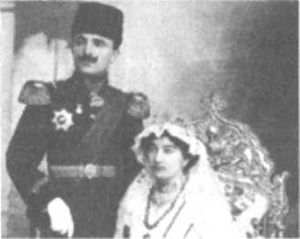
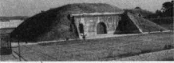
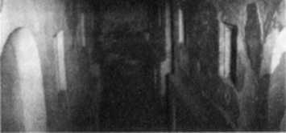
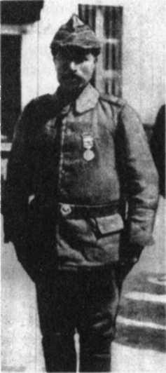
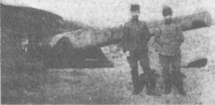
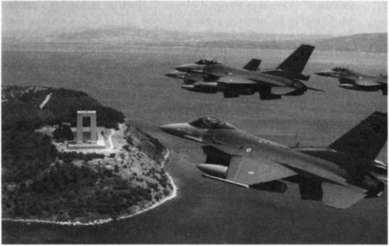

19 ġubat : Çanakkale Deniz SavaĢı baĢlıyor, ilk hücum
25 ġubat : Ġkinci hücum
8 Mart : Nusrat mayın gemisinin Karanlık Limana 26 mayın dökmesi 18 Mart : Çanakkale Deniz SavaĢı
25 Nisan : Karaya çıkıĢ, kara savaĢlarının baĢlaması
25-27 Nis. : Kumkale savaĢı
25-27 Nis. : Arıburnu savaĢları
28 Nisan : Seddülbahir 1. Kirte savaĢı
1 Mayıs : Arıburnu Türk taarruzu
1-3 Mayıs: Seddülbahir'de Türk, Ġngiliz ve Fransız taarruzları 6-8 Mayıs : Seddülbahir 2. Kirte SavaĢı
12/13 May.: Muavenet-i Milliye'nin Goliath'ı batırması
19 Mayıs : Arıburnu'nda Türk taarruzu
4-6 Haz. : Seddülbahir 3. Kirte SavaĢı
21/22 Haz.: Seddülbahir 1. Kerevizdere SavaĢı
28 Haz.-
5 Tem. : Seddülbahir Sığındere SavaĢları
12/13 Tem.: Seddülbahir 2. Kerevizdere SavaĢı
6 -7 Ağ. : Seddülbahir SavaĢları
6-9 Ağ. : Arıburnu-Conkbayırı savaĢları
9 Ağ. : 1. Anafartalar SavaĢı ve zaferi
10 Ağ. : Conkbayırı zaferi
21-22 Ağ.: 2. Anafartalar SavaĢı ve zaferi
20 Aralık: DüĢmanın Arıburnu'dan çekiliĢi
9 Ocak
1916 : DüĢmanın Seddülbahir'den de çekiliĢi, Çanakkale savaĢlarının sonu
Teşekkür
Bana cesaret ve yaĢama sevinci veren sevgili okurlarıma, verdikleri desteğin minnettarı olduğum değerli yazarlara ve öğretmenlere, bana her zamanki gibi harika bir çalıĢma ortamı sağlayan eĢime, özverisini ve desteğini hiç unutmayacağım yardımcım Aslı Timur-Ünsal'a, hiçbir desteği esirgemeyen kardeĢim Ahmet Küflü ile sevgili Bilgi Küflüye minnet borçluyum.
Bilgi Yayınevi'nin tüm çalıĢanlarına, özellikle sevgili Biray Üstüner ve sevgili Argun Tozun'a, Erol Altun ve Ferruh BayĢu'ya, Bilgi Kitabevi'nden ġenol Bilginan'a, oğlum Çan'a, yeğenim Deniz Süer'e, öğrencim Didem ÖztaĢbaĢı'na ve güvenilir yol arkadaĢım Levent Yamaner'e çok teĢekkür ediyorum.
Yardım ve katkılarından dolayı 2. Kolordu Komutanı Korgeneral Hayri Güner'e, Prof.Dr. Mete Tuncoku'na, Yard.Doç.Dr. Ahmet Esenkaya'ya, Nurullah Altınay'a, Çanakkale Müzesi Komutanı Dz.Alb. M. Haluk Çağlar'a ve arkadaĢlarına, Dz.Kd.Yzb. Önder Demirci'ye ve arkadaĢlarına, Aydın ve Nurdan Ergil'e, Doç. Dr. Ġsmet Görgülüye, Öğr.Bnb.Dr. Necati Yalçına, Oğuz Akyüz'e, Askeri Tarih ve Stratejik Etüdler BaĢkanlığı yöneticilerine, çeviri gerektiğinde imdadıma koĢan Arzu Timur'a ve büyüklerinin yazılı anılarını yollayan tarih dostlarına saygı ve teĢekkürlerimi sunuyorum.
DİPNOTLAR, AÇIKLAMALAR
Önsöz
1) Son on yılın yayımları içinde kitap, makale, internete özgü yazı olarak gerçekten önemli ve değerli araĢtırma, inceleme ve derlemeler var. Bu bilim adamlarını, araĢtırmacıları ve yazarları sevgiyle, saygıyla anıyor ve kutluyorum.
2) Çanakkale ve Milli Mücadele hakkındaki baĢlıca yalanlan ve yanlıĢları toplamıĢ, doğruları ve gerçekleri açıklamıĢtım. Çanakkale için bkz. Vahidettin, M. Kemal ve Milli Mücadele, s.94-177, Bilgi Y., Ankara.
3) Ebcet hesabı: Arap harflerine özgü bir hesap sistemi. Her harfin bir sayı değeri var.
4) Talha Uğurluel, Çanakkale SavaĢları ve Gezi Rehberi, Kaynak Y., Ġstanbul, 10. baskı, 2006.
5) DestanlaĢan Çanakkale, Mustafa Turan, s. 137, Papatya Y., Ġstanbul, 2005. Kitapta o kadar çok yanlıĢ var ki düzeltmek için öyle bir kitap daha yazmak gerek. Bu hurafeye yer veren Çanakkale Zaferi ve Adsız Kahramanlar adlı bir de cd var. Cd'de birkaç doğru olayın yanında birçok hurafe de yer alıyor.
On Sekiz Mart Üniversitesi Eğitim Fakültesi Tarih Öğretmenliği bölümünde yapılan ödevler, üniversitenin Çanakkale SavaĢları sitesinde yayımlanıyor. Nusrat mayın gemisi hakkında hazırlanan bir ödevde 'Menkıbelerde Mayınlar' baĢlığı altında bu hurafe yer alıyor. Doğrudan somut, reel bir olayla ilgili bilimsel bir araĢtırmada bu hurafenin iĢi ne? IV. sınıfa gelmiĢ bir tarih öğretmeni adayı, bunun uyduruk bir hikâye olduğunu anlayamaz mı, hiç olmazsa öğretmeni kendisini uyarmaz mı?
Bu sahte menkıbe bilimsel çalıĢmanın içinde ne arıyor?
Meraklısı için ödevin adresi: canakkalesavaslari.comu.edu.tr/
data2/81.pdf
Osmanlı din ile bilimi birbirinden ayıramadığı için dünyayı ve çağı algılayamadı, olayları anlayıp açıklayamadı, ağır ağır çürüdü, sonunda tarihe göç etti. Cumhuriyet'i bu tehlikeden koruyalım, koruyamazsak o da çürüyecek.
5a) Müslüman Türk askeri, bir savaĢta Allah'ın kendisini koruyacağına, Ģehit olursa cennete gideceğine iman eder. Bu büyük bir kuvvettir. Çanakkale ruhunu oluĢturan öğelerden biridir. Ama sırf imanla, duayla, niyazla, çalıĢmadan, askerlik açısından hak etmeden, savaĢ sanatının gereklerini yerine getirmeden zafer kazanılmayacağını da iyi bilir.
Yüzbinlerin boğuĢtuğu bir savaĢ birkaç mucize, birkaç hurafe, birkaç kahraman ve veli ile kazanılamaz; böyle büyük bir savaĢ ve zafer böyle masal gibi anlatılamaz. Böyle büyük bir zaferin arkasında inançla birlikte, bilgi, kurmaylık, komutanlık, eğitim, disiplin, bilinç, yurtseverlik, kahramanlık, özveri ve bir milletin olduğunu görmemek demek, bir savaĢın ne olduğunu hiç bilmemek ve Çanakkale zaferini de hiç anlamamak demektir. Bir savaĢ sırf iman ile, dua ile kazanılsa Müslümanlar hiç yenilmezlerdi. Osmanlı iki yüz yıldır yeniliyordu.
Güzel bir Türk atasözünü anmanın zamanı: Atını berk bağla, ondan sonra TanrTya ısmarla.
Çocuklarımızı çağın gereklerine göre yetiĢtirmeliyiz. Zavallı Irak bu konuda birçok ders alınacak acı bir örnek.
6) M. Turan, DestanlaĢan Çanakkale, s.98; T. Uğurluel, Çanakkale SavaĢları ve Gezi Rehberi, s.148.
7) Bu anlatımın kaynağı: Vehbi Vakkasoğlu, Bir Destandır Çanakkale, s.100, Nesil Y., Ġstanbul, 2002; yakın tarihimizi tersine çevirmeye çalıĢanlardan biri de Vakkasoğlu'dur.
Vahidettin, M. Kemal ve Milli Mücadele adlı kitabın 788. sayfasında bu yazarla ilgili olan sayfalar belirtiliyor; bu sayfalardan birine göz atan, yazarın tutumunu ve durumunu anlar.
8) Çanakkale SavaĢlarından Menkıbeler, s.38.
9) Bu rehberlerden bazıları savaĢ alanını çocuklara hurafeleri anlatarak gezdiriyor, uygun bir yer gelince de, "Burası da M. Kemal'in savaĢtan kaçtığı yer" diyorlarmıĢ. Çanakkale zaferine, bu zafere emeği geçen kahramanlara ve gerçeğe sahiden saygısı olan herkes bu gibi pis, rezil, aĢağılık yalanları durdurmayı bir namus görevi bilmeli.
Başlangıç
1) Osmanlı Devleti için 'Hasta Adam' deyimini ilk olarak 1853'te Rus Çarı I. Nicola kullanmıĢ, bu deyim hızla yayılmıĢtır. Tarihin cilvesi, Nicola'nın Rus Çarlığı, 'Hasta Adam' diye nitelediği Osmanlı Devleti'nden 5 yıl önce yıkılacaktır.
2) Ali Fuat Türkgeldi, Görüp ĠĢittiklerim, s.114.
Rusya'nın saldırgan tutumu yüzünden bir ittifak arama zorunluğu tarihçiler tarafından genel olarak kaçınılmaz, Almanya ile ittifak da Ģartlar dolayasıyla doğal bulunmaktadır.
Rus tehlikesiyle ilgili bilgi ve belgeler için: K. Karabekir, Birinci Cihan SavaĢına Neden Girdik; Y.
Hikmet Bayur, Türk Ġnkılabı Tarihi, III. c, I. Kısım, s.174-181; ATAġE, Çanakkale Cephesi Harekâtı, 1.
Kitap, s.76 vd.; Birinci Dünya SavaĢı Ansiklopedisi, 1. c, s.241; Birinci Dünya Harbinde Türk Harbi, 1.
c, s.282 (Ek-13, Rusların boğazları zaptetmek için yaptıkları hazırlıklar); Fahri Belen, Birinci Cihan Harbinde Türk Harbi, 1914 Hareketleri, s.223 (Ek-8 A).
Almanlara karĢı olan Ali Ġhsan Sabis de Alman ittifakının zorunlu-ğunu kabul etmektedir. A. Ġhsan Sabis, Birinci Cihan Harbi, c.l, s.72 vd.
KarĢı çıkılan husus Alman baskısıyla savaĢa erken girilmesidir. Ġngilizler yıllardan beri Osmanlı Devleti'nin Arap bölgesinde çeĢitli çalıĢmalar ve kıĢkırtmalar yapmaktaydılar. Osmanlılar Ġngilizlerle dostluk ararken Ġngilizler el altından adım adım Osmanlılarla savaĢa hazırlanıyorlardı. Bu konudaki bilgi ve belgeler için: Y. Hikmet Bayur, Türk Ġnkılabı Tarihi, III. c, I. Kısım, s.227 vd.
3) Atatürk Sofya'da ataĢemiliterken Bulgar Genelkurmay BaĢkanı General Fiçev'le görüĢmüĢ, bu görüĢmeyi 5 Kasım 1913 günü bir raporla Genelkurmay'a bildirmiĢtir. General Fiçev diyor ki: "Balkan SavaĢında yaptığım planlar değiĢtirilmeksizin ve baĢarılı bir Ģekilde uygulanmıĢtır. Çünkü ben Osmanlı Genelkurmayının planlarını ve bütün stratejik yığınak hesaplarını tümüyle öğrenmiĢtim.
Bana bu bilgileri Alman subayları vermiĢtir. Özellikle Golç PaĢadan çok yararlandık. (MareĢal von der Golz Osmanlı ordusunda yüksek danıĢman, öğretmen, komutan olarak çalıĢmıĢ, Türklerin büyük saygısını kazanmıĢ bir Alman subayıdır! O bile Bulgarlara casusluk yapıyor.) Berlin'deki askeri ataĢemiz Almanlar tarafından günü gününe ve tümüyle aydınlatılıyordu" {Atatürk'ün Bütün Eserleri, 1. c, s.151)
Balkan SavaĢı'ndan sonra ordumuz, eğitsinler diye yine bu Almanlara teslim edilecektir.
4) Her alandaki laçkalık, çağdıĢılık, hantallık, sorumsuzluk orduya da sinmiĢtir. Ordudaki subayların içinde okul görmemiĢ alaylı subaylar, okuma yazması olmayan paĢalar da vardır. Küçük iyileĢtirmeler derin sorunları çözmeye yetmemiĢtir. Ġyi yetiĢen küçük rütbeli kurmay subayların ordunun geneline etkisi yetersiz kalır. Ordunun modern savaĢ usullerinden, savaĢ sanatındaki geliĢmelerden, yeni silahlardan genel olarak haberi yoktur. 1878'den bu yana bir kez bile tatbikat yapılmamıĢtır. Güncel siyaset orduya da bulaĢmıĢ, bu durum erlere kadar sızmıĢ, orduyu çeĢitli gruplara bölmüĢtür.
Ordu Komutanı Ġsmail Fazıl PaĢa savaĢtan kısa bir süre önce, "Bu ordu ile harp edilemez" diye rapor vermiĢtir. Trakya Ordu Komutanı Abdullah PaĢa demiĢtir ki: "Bu ordu yalnız Bulgarlarla bile harp edemez."
Mehmet Nüzhet PaĢa anlatıyor: "...Asker karĢı tedbirler alacağı yerde, aĢırı korkuya düĢtü ve beklenmeyen bir kaçıĢ baĢladı. Bütün kuvvetler yerlerim periĢan surette terk ederek paniğe kapıldılar. Bu askerler ağırlıklarım, arabalarını, toplarını, cephanelerim, bütün malzemeyi, hatta yiyecek maddelerini de yollarda terk ederek kaçıyorlardı" (Hepsi için: ġ.S. Aydemir, Enver PaĢa, 2. c, s.310)
190.000 kiĢilik Rumeli Ordusundan geriye 30.000 kiĢi dönebilmiĢtir (Ġ. Artuç, Balkan SavaĢı, s.306).
Genel kaybın büyüklüğü bu sonuca bakılarak kestirilebilir.
Oysa savaĢa yakın günlerde BaĢkomutan Nazım PaĢa, Cemil Topuzlu PaĢaya der ki: "Harp ilanından bir hafta geçmeden Osmanlı bayrağı Filibe ve Sofya'da görülecektir." (Operatör Dr. Cemal Topuzlu PaĢa, 80 Yıllık Hatıralarım, s.141) Ordu ve BaĢkomutanı böyle.
5) II. Abdülhamit döneminde, 1878'de Rus ordusu Ġstanbul'un daha yakınına, YeĢilköy'e kadar gelmiĢ, zaferinin anısına YeĢilköy'de bir anıt da dikmiĢti. Ġngiltere o zaman bir gruba dahil değildi ve Rusya'nın Boğazlara egemen olmasına Ģiddetle karĢıydı. Ġngiltere'nin ağırlığını koyması üzerine Rus ordusu Edirne'yi de boĢaltarak geri çekilecektir. (Mufassal Osmanlı Tarihi, 6. c, s.3328) 1912 yılında ise Ġngiltere, Rusya ile aynı kamptadır, Osmanlı topraklarını paylaĢmak için anlaĢmıĢlardır. Ruslara pay olarak Boğazlar sözü verilmiĢtir.
Osmanlı Devleti ezeli, hırslı düĢmanı Rusya karĢısında yapayalnızdı.
6) Çatalca hattındaki birliklerin kolera yüzünden verdiği kayıp 40.000'den fazla hesaplanmıĢtır (ġ.S.
Aydemir, Enver PaĢa, 2. c, s.363).
7) Bu durum yaklaĢık iki-üç yüzyıllık bir sürecin sonucudur. Batıdaki geliĢim, aydınlanma iyi izlenmemiĢ, önemi kavranmamıĢ, sanayi devrimi atlanmıĢtı. Batı medreselerini üniversiteye dönüĢtürürken, biz medreselerimizden müsbet ilimleri uzaklaĢtırdık.
Batı eğitime değer veriyor, sanatı destekliyor, kadın haklarını tanımaya baĢlıyor, makineye geçiyor, üretiyor, dünyaya yayılıyor. Buna karĢılık Osmanlı içine kapanıyor. Dünyanın değiĢtiğini, geliĢtiğini anlamıyor. Yakasını kör taassuba, hurafeye kaptırıyor, bilgine değil, bağnaza, ham sofuya, müneccime önem veriyor. Batı, insanı, doğayı, evreni inceler, keĢif ve icatlar yaparken, bizde MüneccimbaĢı sarayın en önemli adamı oldu. Batı akla özgürlüğünü verirken, biz hurafeyi, ortaçağ
anlayıĢını aklın önüne geçirdik. Matbaaya icadından ancak 275 yıl sonra izin verdik. 1729'dan 1830'a kadarki 101 yıl içinde sadece 180 Türkçe kitap basıldı. Batıda ise 1454'ten 1500 yılına kadarki 46 yıl içinde basılan kitap sayısı 40.000'dir. Bu fark Batı ile aramızdaki farkın derinliğini gösterir. Ortaçağ
kafası Takyettin Efendi'nin kurduğu rasathaneyi uğursuzluk getirir iddiası ile yıktırmıĢtır. Osmanlı, din ile bilimi birbirinden ayırmayı baĢaramadı. Ne acıdır ki hâlâ da ayıramayanfar var. Çağa ayak uydurulamadığı, gerekli ve yeterli iyileĢtirmeler yapılamadığı için Batı ile aradaki fark giderek açılmıĢ, çok açıldığı için bir daha da kapatılamamıĢ, sömürgecilerin türlü tuzaklarına düĢülmüĢ, sonunda koca devlet damla damla eriyip bitmiĢtir. Tanzimat toplumsal açıdan önemli, gerekli, zorunlu bir hareketti. Ama köklü bir reform değildi. Ekonomi bakımından da Türkiye'yi Avrupa'ya bağımlı yaptı.
Ordunun yenilenmesi gerektiği anlaĢılarak, birkaç ciddi giriĢimde bulunulmuĢtur. Mühendishane, tıbbiye açılır vb. Bu nedenle orduda az-çok aydınlık bir ortam oluĢur. Birçok yenilik ordudan kaynaklanır ya da ordudan destek görür. Ama devlet sadece orduyu iyileĢtirerek yenilenemezdi.
Ölüm durdurulamadı.
Tarihe önyargısız bakılırsa bu ĢaĢırtıcı çöküĢün üç sorumlusu olduğu anlaĢılır: 1. Beceriksiz, ufuksuz, bilgisiz, çağdıĢı, rüĢvetçi yöneticiler, 2. Her yeniliğe, her yeni düĢünceye karĢı çıkan bağnazlar, ham sofular (gerçek dindar bağnaz olmaz), 3. Kurnaz, acımasız, uzağı gören, sürekli yöntem geliĢtiren sömürgeciler.
Osmanlı Devleti'nin siyasal-toplumsal tarihi, bu üçlü ile devleti ve toplumu kurtarmak için bir Ģeyler yapmaya çabalayan, çırpınan namuslu yönetici ve yurtsever aydınların, kısacası toplumsal kahramanların çatıĢması diye özetlenebilir.
8) Birkaç sayı ile Osmanlı Devleti'nin durumu:
BaĢlangıç Notları 303
Demiryolları: Almanya 64.000 km, Rusya 65.000 km, Osmanlı 5.700 km (yarısı bugünkü sınırlar dıĢında).
Nüfus: Ġngiltere 45.000.000, Fransa 40.000.000, Almanya 65.000.000, Osmanlı Ġmparatorluğu 22.000.000.
Yıllık çelik üretimi: Ġngiltere 7.000.000 ton, Rusya 4.500.000 ton, Almanya 17.000.000 ton, Osmanlı sıfır.
Kruvazör: Ġngiltere 121, Rusya 14, Almanya 57, Osmanlı sıfır. (Birinci Dünya SavaĢı Ansiklopedisi, 1.
c, s.68)
"1912 yılında Ġstanbul'daki 40 özel bankacıdan 12'si Ermeni, 12'si Rum, 8'i Musevi ve 5'i Levanten veya Avrupalı idi. Ġstanbul'daki 34 borsacıdan 18'i Rum, 6'sı Musevi, 5'i Ermeni idi. Hiç Türk yoktu."
(Bernard Lewis, Ortadoğu, s.339)
Hiçbir köyde devlet ilkokulu yok. Köylerde eğitim mollaların elinde. Azınlıkların ise modern okulları var.
Osmanlılar, devleti, batana kadar Devlet-i Âliye (büyük devlet) diye anmıĢlardır. ġu sayılar Osmanlının artık büyük devletlikle hiçbir ilgisi kalmadığını göstermektedir. Bu birkaç sayı, Osmanlı Devleti'ne neden 'hasta adam' denildiğini de gösterir. 8a) Bu anlayıĢın aĢırıları, tanzimata, meĢrutiyete, orduya, Ġttihat ve Terakkiye, milliliğe, bilime, akla, eğlenmeye, musikiye, kadın haklarına muhalif, kendileri gibi düĢünmeyen, konuĢmayan, yaĢamayan, giyinmeyen herkese düĢmandır.
Bu anlayıĢta olanların bazıları, Hürriyet ve Ġtilaf Partisi'nde toplanmıĢ, bu partinin aĢırı kanadını oluĢ-
turmuĢlardı.
Enver PaĢa hepsinden daha dindardı, hatta bağnazdı. Ama onlardan değildi. Öyleyse onun dindarlığının hiçbir anlamı, değeri yoktu. Onlar için önemli olan ne dindi, ne de dindarlıktı, onlardan olmaktı. Enver PaĢa Gülhane Parkı'nın açılıĢında kadın ve erkeklerin birlikte parkı gezmelerine kızar, Belediye BaĢkanlığına yolladığı bir yazı ile kadınların parka girmelerinin yasak edilmesini ister (Op.Dr. Cemil Topuzlu PaĢa, 80 Yıllık Hatıralarım, s.135).
9) Osmanlı kadınlarının hak aramaya baĢlamalarının tarihi yeni değildir. Dönemin Ģartları gereği yavaĢ baĢlamıĢ, ilginç ve zorlu aĢamalardan geçerek gittikçe yayılıp güçlenmiĢtir.
10) Kayıplarımız, göçmenlerin durumu ve sayısı hakkında: Ġbrahim Ar-tuç, Balkan SavaĢı, s.292-295.
11) Osmanlı Devleti iki yüzyıldır savaĢta yeniliyor, barıĢ masasında da horlanıyordu. Galibiyetleri bile bir yenilgi gibi sonuç veriyordu. Her konuda Avrupa'dan geriydi. Bu durum Osmanlı yönetici ve aydınlarının çoğunda aĢağılık duygusu yarattı. Batıyı yenilmez, üstün, daima haklı, bir çeĢit 'efendi'
görmeye baĢladılar. Batıya itiraz etmeyi küstahlık, her isteğini emir saydılar. Bu duygu çoğunun iliklerine iĢledi. Batıya biat ettiler. Bunlar teslimiyetçilerdir. Mesela Mütareke dönemindeki Ġstanbul yönetiminin en belirgin niteliği teslimiyetçiliğidir. Osmanlı Devletini bunlar batırmıĢlardır. Bunlara karĢılık yurtsever yöneticiler ve aydınlar Batının bilim, sanat ve teknoloji alanlarındaki üstünlüğüne saygı duyuyor ama siyasetçe bencil, sömürücü ve aldatıcı olduğunu görerek teslimiyetçiliği reddediyorlardı. Batı ile aradaki farkın kapatılması için devleti düzeltmek, toplumu yükseltmek gerektiğini görüyorlardı. Bu amaçla içine kapalı, durgun Osmanlı toplumunu uyandırmak, çağa açmak, topluma yeni bir ruh kazandırmak için çeĢitli giriĢimlerde bulunmakta, çeĢitli düĢünceler üretmekteydiler.
Türkiye Cumhuriyeti'ni, emperyalizm karĢısında dik durmayı bilen, aĢağılık duygusuna yenik düĢmeyen bilinçli, millici, gerçekçi yurtseverler kuracaktır.
12) 23 Ocak 1913: Binanın içinde kısa süren bir çatıĢma yaĢandı. Nazırlara bilgi vermek için Sadrazamın baĢkanlığındaki toplantıya katılmıĢ olan BaĢkomutan V. Nazım PaĢa odadan dıĢarı çıkıp da eli silahlı Ġttihatçıları azarlamaya kalkıĢınca, Yakup Cemal adlı fedai tarafından Ģakağından vuruldu.
13) Ġttihatçıların üç liderinden biri olan Talat Bey 'paĢa' sanı ile Dahiliye Nazırlığına (ĠçiĢleri Bakanlığına), Ahmet Ġzzet PaĢa da Harbiye Nazırlığına (SavaĢ Bakanlığına) getirildi. Ordunun iyileĢtirilmesi çalıĢmalarında Ahmet Ġzzet PaĢanın önemli katkısı olacaktır.
14) Önce gizli bir örgüt olarak kurulan, giderek açığa çıkan Ġttihat ve Terakki topluluğu, 1908'de ayaklanarak meĢrutiyeti ilan ettirir, ülkede yeniden özgürlük dönemini açar.
Kısa bir süre sonra Ġstanbul'da gerici bir isyan (31 Mart) patlak verdi. II. Abdülhamit tahttan indirildi, yerine Sultan ReĢat getirildi. 1911 yılının sonunda Hürriyet ve Ġtilaf adını alan gerici, din istismarcısı, Ġngilizci, karanlık ve karıĢık bir parti kuruldu. O dönem siyasi hayatının iki kutbu bunlardır.
Ġkisinden de çeĢitli partiler üremiĢtir.
15) Osmanlı-Alman iliĢkileri hakkında Ģu kitabı tavsiye ederim: Ġ. Ortaylı, Osmanlı Ġmparatorluğunda Alman Nüfuzu, ĠletiĢim Y., Ġstanbul, 1998.
A. Ġzzet PaĢa M. ġevket PaĢayı uyarır, 'orduyu bütünüyle Almanlara teslim etmemesini' öğütler (M.
ġevket PaĢanın Günlüğü, s.245). Alman Ġmparatoru Osmanlı Büyükelçisine Ģöyle diyecektir: "Sadrazamınız, göndereceğim Alman generaline geniĢ yetki verirse, Türk ordusu, mühim bir kuvvet derecesine yükselecektir." (M. ġevket PaĢanın Günlüğü, s.261) M. ġevket PaĢa Alman Ġmparatorunun tavsiyesini dinleyecek, gelecek Alman generaline olağanüstü yetkiler tanınmasını sağlayacaktır.
16) SipariĢin çoğu, Alman öğretmenlerin ve danıĢmanların etkisiyle Almanya'ya yapılıyordu. Alman firmalar sipariĢleri karĢılamak için avans istiyordu. Para yetersizliğinden istenilen avans zamanında verilemediği için silah ve cephane alımı aksamıĢtı.
Bu aksamayı, Birinci Dünya SavaĢTnın baĢında, Sırbistan ve Romanya'nın Türkiye'ye demiryoluyla cephane ve silah gönderilmesini engellemesi izleyecek, bu yüzden Çanakkale SavaĢında ciddi cephane sıkıntısı yaĢanacaktır.
17) Birinci Dünya Harbi, 9. c, Türk Hava Harekâtı, s.5; Jandarmanın ıslahı iĢi de Fransız General Baumann'a verilmiĢti.
Yöneticiler Avrupa'nın çok gerisinde kaldıklarının iyice farkındaydılar ama ne bunun nedenlerini araĢtırıp saptayabiliyor, ne farkı kapatmak için gereken ciddi atılımları yapabiliyordu. Günümüzün Osmanlıcıları da geri kalıĢın nedenlerini hâlâ doğru saptayamıyor, açıklamıyor, cumhuriyetin bu farkı kapatmak için aldığı önlemlerin, yaptığı atılımların değerini ve gerekliliğini belirtmekten de kaçınıyor ya da kavrayamıyorlar. Bazıları bu atılımları körletmeye çalıĢıyor.
18) Ordu son gücünü harcayarak bir taarruz yaptı ama Bulgarları yenmeyi baĢaramadı, Edirne yolunu açamadı. Bu baĢarısızlık ve ümitsizlik sonucu Londra BarıĢ AndlaĢması imzalandı.
19) salip= haç (Hıristiyanlar), hilal= ay (Müslümanlar).
19a) Bunlar üç gruptu. Birinciler yönetimi ele geçirmiĢ ya da yönetime sızmıĢ devĢirmeler, dönmeler, tatlısu Türkleri, gafiller, cahiller. Ġkinci grup milli olan her Ģeye muhalif çağdıĢı ham sofular, ümmetçiler; bunların bir kısmı özellikle Türk karĢıtıdır. Üçüncü grup ise çoğunluk olan Türkler uyanırsa iĢlerinin bozulacağını sezen çağdaĢ sömürgeciler ve ajanlarıdır. Bu üç çevre türlü yöntemlerle bu uyanıĢı yavaĢlatmayı baĢarmıĢlardı.
20) En hafif milli duygudan ırkçılığa, Anadoluculuktan Turancılığa kadar milliyetçiliğin her türlüsü yeĢerecektir. Milliyetçilik Birinci Dünya SavaĢı ve Milli Mücadele süreçlerinde taĢkınlıklardan, hastalıklardan, çağdıĢı renklerden temizlenerek özü yurtseverlik olan milli anlayıĢa yükselecektir.
Atatürk milliyetçiliği budur. Türkiye Cumhuriyeti'nin çimentosudur.
21) Din savaĢları dönemi kapanmıĢtı. Artık baĢka amaçlar, ülküler ve duygularla savaĢılıyordu.
Osmanlı, uzun zaman bu değiĢimi kavrayamamıĢ, yeni savaĢların, yeni Ģartların aradığı asker tipini yaratamamıĢtır. Balkan SavaĢından sonra büyük bir uyanıĢ olur, yeni bir asker kimliği oluĢur. Eski kimliğe iki yeni öğe katılır: Milli duygu/bilinç ve yeni tarz savaĢ bilgisi. Çanakkale SavaĢını bu yeni kimlikteki asker kazanacaktır.
21a) Türk milliyetçiliğinin öncülerinden Ziya Gökalp'in en karĢı olduğu yaklaĢım, ırkçılıktır. Her uygar, kafaca sağlıklı insan ırkçılığa karĢıdır. Ġlginç bir durum var: Türk milliyetçiliğini söndürmek isteyenlerin çoğu, etnik grupların ırkçıları ile mezhep ırkçıları. Ġlk çıkıĢında Türk milliyetçiliği emperyalizme ve iç ırkçılıklara karĢı bir meĢru müdafaa tepkisiydi. Aradan 100 yıl geçti. Durum Ģim-di de aynı. Ayının kırk türküsü varmıĢ, kırkı da ahlat üzerineymiĢ. Emperyalizmin, ayrılıkçılığın, globalciliğin de kırk türküsü var, kırkı da Türklük, millilik, yurtseverlik aleyhine. Uzaktan bakınca, eski bir siyah-beyaz filmin yeni gösterimi gibi görünüyorlar. Zevkleri geliĢmiĢ olsa, hiç olmazsa bu tıpatıp benzerlikten, kopya çekmekten kaçınırlar. TC halkının 47 etnik gruptan oluĢan bir mozaik olduğu hakkındaki iddia da bütünüyle gerçeklere aykırıdır, tam bir palavradır. Bu palavranın arkasında Peter Alford Andrews adlı bir Alman var (kitabının adı Türkiye'de Etnik Gruplar). Bu konudaki gerçekleri öğrenmek isteyen gençlere Ali Tayyar Önder'in Türkiye'nin Etnik Yapısı (Fark Yayınları, Ankara) adlı kitabını tavsiye ederim.
22) Nezihe Muhittin Türk feminist hareketinin öncülerinden ve roman yazarı.
23) 1913 yılında kadınların çabaları, tepkileri, baskıları sonunda Telefon ġirketi'nde 7 Müslüman Türk hanımına iĢ verildi. Bir yıl sonra da ilk kez yine bir Müslüman Türk hanımı Posta Telgraf Nezareti'nde pul memuru olarak çalıĢmaya baĢladı (S. Çakır, Osmanlı Kadın Hareketi, s.292 vd.). Bu geliĢim sürer.
24) SoruĢturmalar sonunda Hürriyet ve Ġtilaf Partisinin, hanedan damatlarından Salih PaĢa'nın, bir sultanzade ve karanlık iliĢkilerin adamı olan Prens Sabahattin'in de cinayetle ilgileri olduğu anlaĢılır.
Dr. Rıza Nur, Ali Kemal, Refi Cevat (Ulunay) vb. gibi kiĢiler de sonu cinayetlere varan Balkan tipi siyaset havasını yaratıp yaymakla, körüklemekle suçlanırlar. Kimi yurtdıĢına kaçar, kimi hapse girer, kimi de Anadolu'ya sürgüne yollanır. Sinop'a yollanan sürgünlerin sayısı 300'den fazladır.
Ġttihat ve Terakki ile Hürriyet ve Ġtilaf arasındaki iliĢki, etkisi bugüne kadar uzanan bir kan davası haline gelecektir.
25) Sultan Osman daha önce Brezilya tarafından sipariĢ edilmiĢ, yarı hazır bir gemiydi. Osmanlı hükümetince satın alındı. ReĢadiye yeniden yapılacaktı. Ayrıntılı bilgi: Nejat Gülen, Dünden Bugüne Bahriyemiz, s.l85vd.
26) 22 Temmuz 1913.
Enver Bey ile Fethi Okyar ve M. Kemal Bey arasında daha önce bir askeri sorun nedeniyle tartıĢma çıkmıĢ, BaĢkomutan araya girerek tarafları yatıĢtırmıĢtı. Enver Bey ile Fethi ve M. Kemal Beyler arasında ciddi farklar vardı. Enver Bey atak, hesapsız, maceracı tutumu temsil ediyordu; karĢısındakiler akılcı, ölçülü, gerçekçi tutumu. Geleceği ikinci tutum kurtarmıĢtır.
Meriç batısına geçen birlikler merkezi Gümülcine olmak üzere Batı Trakya Özerk Türk Cumhuriyeti'ni kurdular. Otuz bin kiĢilik bir ordusu vardı. Türk-Bulgar barıĢ andlaĢması sonucu 25
Ekim 1913'te varlığı sona erdi (Ġ. Görgülü, On Yıllık Harbin Kadrosu, s.43-44; ayrıntılı bilgi için: Tevfik Bıyıklıoğlu, Trakyada Milli Mücadele, 1. c, s.62-93).
27) Ayrıca ikisi de Ġttihat ve Terakki yönetiminin bazı görüĢlerine karĢıydılar. Sofya'ya atanmalarında bu görüĢ farkları da etkili olmuĢtur. M. Kemal 12 Ocak 1914'te (25.1.1914) Sofya'dan arkadaĢı Madam Corinne'e yazdığı mektupta diyor ki:
"Benim ihtiraslarım var, hem de pek büyük. Fakat bu ihtiraslar, yüksek yerler iĢgal etmek veya büyük paralar elde etmek gibi maddi emellerin tatminiyle ilgili değil. Ben bu ihtiraslarımın gerçekleĢmesini, vatanıma büyük faydaları dokunacak, bana da liyakatla yapılmıĢ bir vazifenin canlı iç rahatlığım verecek büyük bir fikrin baĢarısında arıyorum. Bütün hayatımın ilkesi bu olmuĢtur. Ona çok genç yaĢımda sahip oldum ve son nefesime kadar da onu korumaktan geri kalmayacağım" {Atatürk'ün Bütün Eserleri, 1. c, s.179)
28) S. Çakır, Osmanlı Kadın Hareketi, s.248; bütün imparatorlukta sadece bir tane kız lisesi vardı.
29) 14 Aralık 1913. AnlaĢmaya göre her Alman subayına Türkiye'de bir üst rütbe verilecekti.
Tümgeneral Liman von Sanders'in rütbesinin Osmanlı ordusundaki karĢılığı feriklikti (korgeneral), bir üst rütbe verilince birinci ferik (orgeneral) oldu. Alman Ġmparatoru durumunu güçlendirmek için Liman von Sanders'i bir üst rütbeye yükseltti, Türkiye'deki rütbesi de bir basamak yükseldi, bu kez müĢir (mareĢal) oldu. Alman ordusunda general/mareĢal rütbeleri 5 basamak (tuğgeneral, tümgeneral, korgeneral, orgeneral, mareĢal), Osmanlı ordusunda ise 4 basamaktır: Mirliva, ferik, birinci ferik, müĢir (mareĢal). Tümgeneral Liman von Sanders bu nedenle iki aĢamada Osmanlı mareĢali olmuĢtur.

Liman PaĢa müĢir (mareĢal) olunca 1. Ordu Komutanlığına getirilir. Bu ordu Osmanlı Ġmparatorluğunun en önemli ordusudur, Ġstanbul'u, Boğazlan ve Doğu Trakya'yı savunmakla görevlidir. Emrinde 3 kolordu vardır.
AnlaĢmaya göre her Alman subayı Türkiye'de bir üst rütbe, dolayısıyla daha çok para alacak, yemeği de Türk subaylarından farklı, yani özel olacak, bazı yiyecekleri Almanya'dan gelecekti. Türk subayları silah arkadaĢlığına aykırı bu durumu baĢlangıçta anlayıĢla karĢılamaya çalıĢtılar. Ama birlik komutanlıklarına ya da kurmay baĢkanlıklarına atanan, böylece ordunun yönetimine doğrudan katılan Almanların çoğunun kaba, bencil, kibirli tavırları, yetkilerini hazmetmemeleri, yetersizlikleri, Türkleri harcamaları, anlaĢmazlıklara, çatıĢmalara neden olacaktır.
Bir Alman yazarı olan Dr. Harry Stuermer, bu tavrı 'ırkçı Prusya küstahlığı' olarak niteliyor (Kontantinopl'da SavaĢın Ġki Yılı, s.35). 3. Kolordunun divan-ı harp üyeliğine bile bir Alman yüzbaĢı ata-nabilmiĢtir (Hans Guhr, Türklerle Omuz Omuza, s.194). Orduya bu kadar girmiĢ durumdaydılar.
Saygı ve sevgi ile anılanların sayısı çok azdır.
Süleyman Nazif diyor ki: "Biz tarihlerde ve gazetelerde okuduğumuz Alman ordusunun mükemmelliğinden, Golz PaĢa dıĢında, ülkemizde hiçbir iz ve o mükemmelliyeti taĢıyan bir tek adam görmedik" {Çanakkale SavaĢı, yayına haz. M. Albayrak, s. 12) Türkiye'de görev yapan Alman subayların adları ve görev tarihleri için: Ġsmet Ġnönü, Hatıralar, 1. c.
ek 2, s.309 vd., (Sabahattin Selek'in hazırladığı not).
30) Asıl büyük sorun derindeydi. Ağır ağır su üzerine çıkacaktı: Almanya, Reform Kurulu'na Türk ordusunun yalnız eğitiminde değil, yönetiminde de söz sahibi olmak yetkisi istiyordu. Bu yetki verilecektir. Liman PaĢa'nın durumu güçlenir, danıĢman, öğretmen nitelikli subaylar birliklere komutan ya da kurmay baĢkanı olarak atanırlar (Jahuda L.Wallach, Bir Askeri Yardımın Anatomisi, s.118). Bu durum sorunlara ve acı olaylara yol açar. Bunlara savaĢ içinde yakından ve birçok kez tanık olacağız.
31) Yarbay Enver Beye, Trablus ve Balkan SavaĢlarındaki hizmetlerinden dolayı üçer yıl kıdem verilir, 18 Aralık 1913'te albaylığa, 19 gün sonra da, 1 Ocak 1914'te paĢalığa (mirliva) terfi ettirilir. 1 Ocak günü aynı zamanda Harbiye Nazırı olur, 5 gün sonra 6 Ocakta da Genelkurmay BaĢkanlığına getirilir.
Bu sırada Abdülmecit'in yedi oğlundan biri olan ġehzade Süleyman Efendinin kızı 15 yaĢındaki Naciye Sultan ile evlenmiĢ, böylece hanedan damadı da olmuĢtur.
Orduda Enver PaĢa kadar tanınmıĢ bir genç komutan, dolayısıyla rakip yoktu. Kaçana kadar orduyu komutası altında tutmuĢtur. Liderler arası eĢitliğin sağlanması için Cemal Bey de iki rütbe birden yükseltilerek 'paĢa' yapılır ve Bahriye (Deniz) Nazırlığına getirilir. Artık üçü de paĢa ve nazırdır.
32) Ordu bu temizlik sayesinde bütünlüğünü kazanmıĢ, yeni, sağlıklı bir ordu olmuĢtur. Tarihten ders almayan partici anlayıĢ bugün de orduya kendi taraftarlarını sokmaya çabalıyor. Orduyu parçalayacak bu giriĢimler insanı düĢündürüyor. Amaç ne? Birileri bu kiĢilere ordunun bütünlüğünün önemini, bütünlüğü bozmanın tehlikelerini anlatsa!
33) S. Çakır, age., s.224; Ġnas (Kız) Üniversitesi 12 Eylül 1914'te açılır. Kızlara ayrı dersler veriliyordu.
Koridorlarda erkek öğrencilerle karĢılaĢmasınlar diye binaları ayrıldı. Kız Üniversitesi Cağaloğlu'na alındı. Karma eğitim 1921'de çeĢitli sorunlarla dolu olarak baĢlayacaktır.
34) Bu tarihte sahneye çıkmak erkek için ayıp, kadın için ahlaksızlık sayılıyordu. Kadınlar çetin, olaylı aĢamalardan sonra sahneye çıkabil-di. Hâlâ da tiyatroyu gereksiz sayan, bale sanatını ahlaksızlık diye niteleyen kafalar var. Sanatsız, içe kapanık, her yeniliğin engellendiği bir toplumun sonunun ne olduğunu Osmanlı tarihi gösteriyor. Ġnsan bu ibret verici tarihten ders almaz mı?
35) Opr.Dr. Cemil Topuzlu PaĢa, 80 Yıllık Hatıralarım, s.107 vd. Cemil PaĢa Belediye BaĢkanı olduğu zamanki Ġstanbul'un durumunu kısa dokunuĢlarla anlatıyor. Toplumun düzeyine, yönetimlerin zavallılığına ayna tutuyor. Anlattığı ilkellikler insanı irkiltiyor. Bu gerilikte bir imparatorluk 20.
yüzyılda varlığını sürdürebilir miydi?
36) Sınava girenler arasında Ali Naci Karacan, Peyami Safa, Halit Fahri Ozansoy, Behzat Butak, Celal Sahir Erozan, Ġ. Galip Arcan vardı (Özdemir Nutku, Darülbedayi'nin Elli Yılı, s.23).
36a) Serpil Çakır, Osmanlı Kadın Hareketi, s. 104-105, Nimet Cemil Hanım'ın 16 Mayıs 1914 günlü yazısı. Küçük eklemeler yapıldı. [Kadınlarımız yirminci yüzyılın baĢında bu çağdıĢı anlaĢıyla mücadele ediyorlardı.]
37) /. Ġnönü, Hatıralar, s.313-319 (Ek-3).
AnlaĢma hakkındaki bilgiler ilke olarak Sabahattin Selek'in hazırladığı Ek-3'ten alınmadır. Bu çalıĢmada Osmanlı-Alman ittifak anlaĢmasının aĢamaları kronolojik ve ayrıntılı bir biçimde yer alıyor. K. Karabekir'in Cihan Harbine Nasıl Girdik, A. Ġhsan Sabis'in Birinci Dünya Harbi c. l'inde, Maliye Nazırı Cavit Bey'in anılarında (ġ.S. Aydemir, Enver PaĢa, 2. c, s.512-519) bu bilgileri doğrulayan ve geniĢleten çok ilginç ayrıntılar var; ayrıca Prof.Dr. Fahir Armaoğlu, Siyasi Tarih, s.420
vd.
38) Cavit Bey Almanya ile ittifak yapılmasına karĢıydı. Bunun bir Rus saldırısına neden olacağından, memleketin mahvolacağından korkuyordu. Talat PaĢa Cavit Bey'e geliĢimi 'mukadderat' diye açıklar ve savunur. Aklı, gerçekleri, hesabı kitabı dikkate almayan bu kaderci anlayıĢ, devleti geri bıraktığı gibi yıkımına da neden olacaktır. Bütün kitaplarda Ġttihat ve Terakki Partisi liderlerinin yurtsever oldukları yazılıdır. Maceracı, kan ve can hovardası, hayalci yurtseverlik, yurtseverlik midir?
39) Alman, Avusuturya-Macaristan ve Osmanlı Ġmparatorluğu ile Rus Çarlığı bu savaĢın sonunda yenilecek, dört imparatorluk da tarihe karıĢacaktır. Ġngiltere de gücünü yitirir. Bu dönemden en güçlü olarak ABD ile Japonya çıkacaktır.
40) /. Ġnönü, Hatıralar, 1. c, s.315 (Ek-3); AnlaĢmayla ilgili olarak Alman Büyükelçiliği ile Alman DıĢiĢleri Bakanlığı arasındaki yazıĢmalar için: Ernest Jackh, Yükselen Hilal, s.23-51.
41) /. Ġnönü, Hatıralar, 1. c, s.316 (Ek-3), Alman Ġmparatorunun Avusturya ataĢemiliterine açıklamasına dayanarak. Bu sözü Liman PaĢaya Enver PaĢa kendi baĢına vermiĢ olabilir. Konunun bu evresi aydınlık değil.
42) Buna karĢılık Atatürk Milli Mücadeleyi Türkiye Büyük Millet Meclisi ile birlikte ve sıkıyönetimsiz yürütecektir. Meclise büyük önem vermiĢ, saygı göstermiĢtir. 1950'den sonra hiçbir lider Meclis'e Atatürk gibi önem vermiĢ, saygı göstermiĢ değildir. Atatürk ile hepsinin arasında bu konuda da çok büyük fark var.
43) BaĢkomutan anayasa gereği PadiĢah olduğundan Enver PaĢa'dan BaĢkomutan Vekili diye söz edilir. Bu kitapta kısaca BaĢkomutan denilecektir.
44) AnlaĢma Bakanlar kurulunca 17 Ekim 1914'te onaylandı (ġ.S. Aydemir, Enver PaĢa, 2. c, s.511).
45) 2. MeĢrutiyet'ten sonraki akımlar, o dönemle ilgili eserlerde, baĢlıca dört ana baĢlık altında toplanıyor:
Osmanlıcılık/Ġttihat-ı anasır, Türkçülük/Turancılık, Ġslamcılık/Ġslam birliği, Batıcılık/çağdaĢlaĢma.
Bunların kolları da vardır. Aynı güçte olmamakla birlikte sosyalizm, halkçılık, liberalizm gibi akımları da eklemek gerekir. Çok önemli bir olgu da kadın hareketidir. Bu akımlardan söz edilirken kadın hareketine yer vermemek büyük eksiklik olur.
Ġttihat ve Terakki, çeĢitli hiziplerden oluĢan karma bir kitledir. Bu hizipler içinde yukarki dört akımın temsilcileri de vardır. Ziya Gö-kalp bu akımlardan üçünü birleĢtirmeye çalıĢmıĢtır. TürkleĢmek, ĠslamlaĢmak, MuasırlaĢmak kitabı bu çabanın ürünüdür. ġunu belirtmek gerek: Ġttihat ve Terakki yandaĢlarının çoğunluğunu yurtseverler oluĢturur. BaĢtaki üç liderin nitelikleri o dönemin sorunları karĢısında yetersiz kalmıĢ, duygusal ve maceracı yanlan yüzünden devlet ölüm yolculuğuna çıkmıĢtır.
KarĢıtı Hürriyet ve Ġtilaf Partisi de türlü hiziplerden kurulu karma bir kitledir. Bunları biraraya getiren ana güdü Ġttihatçılığa muhalefet ve kurulu düzeni korumaktır. Bu partinin içinde de sırf Ġttihatçılığa muhalif olduğu için yer almıĢ yurtseverler var. Ama bu partiye ümmetçi, dinci, ham sofu, Ġngilizci, iĢbirlikçi, milli olan her Ģeye muhalif, bağımsızlık düĢüncesinden yoksun, teslimiyetçi olanlar egemendir. Bu partinin gövdesini tutucular oluĢturur. Sorun olanlar daha çok yöneticilerdir.
Bu partinin yöneticileri Milli Mücadele döneminde Ġngilizlerin destekçisi olacak, Yunanlılarla bile iĢbirliği yapacaktır. Bu anlayıĢın unutulmaz örnekleri Damat Ferit, M. Sabri, Sait Molla'dır.
46) Alman BaĢkomutanlığı ünlü stratejist Schlieffen'in hazırladığı planı uyguluyordu: Kırk gün içinde Fransa'yı dize getirmek, sonra dönüp Rusya'ya yüklenip onu da bitirmek. Riski çok yüksek bir plandı bu. Cephelerden birindeki baĢarısızlık genel baĢarısızlığa yol açardı. Alman ordusu etkili bir savaĢ
makinesidir. Reform Kurulu'ndan Albay Frankenberg askeri eğitimin amacını Ģöyle açıklar: "Askerin talim ve terbiyesi o kadar ileri olmalıdır ki askerler birer harp hayvanı haline gelsinler. Almanya ordusunda askeri terbiyenin amacı budur" (K. Karabekir, Birinci Cihan Harbine Neden Girdik, s.57) Ama Alman kurmaylığının üstünlüğü dayanaksız bir efsanedir. Almanya iki kez dünya savaĢını baĢlatmıĢ, ikisinde de yenilmiĢtir. Değerlendirme ve doğru karar vermede yetersizlik ve isabetsizlik Alman politikacılığının da belirgin özelliklerindedir.
47) Ali Ġhsan Sabis, Birinci Dünya Harbi, 1. c, s.170; Fahri Belen, 20. Yüzyılda Osmanlı Devleti, s.197; Fahri Belen, Birinci Cihan Harbinde Türk Harbi, 1914 Hareketleri, s.55 vd.
Bronsart PaĢa planını yalnız Rusya ve Balkan devletlerini dikkate alarak hazırlamıĢtı. Mesela Irak'ı boĢ bırakır. Bu nedenle planda birçok değiĢiklik yapılacaktır.
Cihat planda bir Alman düĢüncesi olarak yer almıĢtır. Almanların ısrarı üzerine ilan edilecektir. Türk ordusunun savaĢmak için cihat ilanına ihtiyacı yoktu. Hiçbir savaĢa cihat ilan edilerek girilmemiĢtir.
Bu Alman fantezisi, halifeliğin iĢlevinin kalmadığını göstermeye yarayacaktır.
48) ġ.S. Aydemir, Enver PaĢa, 2. c, s.502.
Almanya'yı Birinci Wilhelm kurmuĢtu, ikincisi yıkıma götürecekti. Kendini büyük bir asker sanıyordu. Olmadığını yenilince anlayacak, dört yıl sonra Almanya'dan kaçmak zorunda kalacaktır.
49) Bilal N. ġimĢir, Ermeni Meselesi, s.128.
50) Yavuz 23.580 tonluk yeni, güçlü bir savaĢ gemisi. Hızı 29 mil. Ġki bacali. 186 m. boyunda. Birçok ağır ve orta topu var. Ġki geminin Boğaz'a giriĢinin tarihini 11 Ağustos olarak bildirenler de bulunuyor.
Boğazlarla ilgili uluslararası statüye göre ya bu gemilerin 24 saat içinde ayrılmaları ya da silahlarını teslim etmeleri gerekiyordu. Sadrazam Alman Büyükelçisini çağırtarak bu durumu hatırlatır. Cavit Bey anlatıyor: "Büyükelçi Sadrazamı tehdit etmiĢ. Eğer böyle yapacak olursak Ruslarla birleĢip Türkiye'yi taksim edeceklerini söylemiĢ!' (ġ.S. Aydemir, Enver PaĢa, 2. c, s.529) Ġttifak anlaĢması imzalanalı daha 8 gün olmuĢ ve Alman Büyükelçisi Sadrazamı Ruslarla anlaĢıp Türkiye'yi aralarında bölüĢebileceklerini ileri sürerek korkutmaya çalıĢıyor! Aynı tehdidi kapitülasyonlar kaldırıldığı gün de yapacaktır.
Bir emperyalist ülkenin uydusu olan bir devletin yazgısı da, göreceği muamele de, karĢılaĢacağı üslup da budur.
51) K. Karabekir, Birinci Cihan SavaĢına Nasıl Girdik, s.282.
Bir gün önce de Alman Genelkurmay BaĢkanı General von Molt-ke'den Enver PaĢaya, Almanya'nın Türkiye'ye verdiği iki görevi açıklayan bir yazı gelmiĢti. Yazının anlamı kısaca Ģuydu: "1. Osmanlı ordusu mümkün olduğu kadar çok Rus ve Ġngiliz birliğini meĢgul edecek, 2. Bunlara karĢı Ġslam ihtilalini gerçekleĢtirecek." (E. Orgeneral Ali Fuat Erden, Paris'ten Tih Sahrasına, s.25)
Ġkinci baskı giriĢiminin tarihi 31 Ağustostur. Üçüncü ve son baskının tarihi de 20 Ekim (K. Karabekir, Birinci Cihan Harbine Nasıl Girdik, s.280-330; A.Ġ. Sabis, Birinci Dünya Harbi, 1. c, s.109, 251; 2. c, s.52, s.69-72, s.78).
Gerçekçi, akılcı Türk kurmayların amacı savaĢa girmeyi mümkün olduğu kadar geciktirmek, hiç olmazsa iki yıl kazarmaktı. Almanlar ise Türklerin savaĢa girerek kendisine yardım etmesini istiyorlardı. Enver PaĢa bu isteği fazlasıyla karĢılayacaktır (/. Ġnönü, Hatıralar, 1. c.s.107). Hatta asıl cephelerden birlikler çekerek sınır dıĢına yollar. Birinci Dünya SavaĢı ile ilgili askeri tarihler bu gibi tehlikeli fedakârlıklar, sonuçsuz maceralarla dolu. Yıkım böyle gerçekleĢir.
52) Bunun üzerine donanmanın eğitimiyle ilgilenen Ġngiliz Amirali A. Henry Limpus ve ekipi Ġstanbul'dan ayrıldılar. Amiral Limpus Malta Tersanesi Komutanlığına atanacaktır.
Alman Amiral Guido von Usedom, Ġstanbul ve Çanakkale Boğazları Genel Komutanlığına getirildi.
Karargâhı Ġstanbul'dadır, ara sıra Çanakkale'ye gelir. ĠĢe yararlılığı hakkında ciddi bir bilgi ve belge yok. Amiral Merten Çanakkale'ye BaĢkomutanlık Temsilcisi olarak atandı. Selahattin Adil, bu amirali,
'deniz iĢlerine bakan ve izleyen tecrübeli, sevimli, uysal bir ihtiyar' olarak tanımlıyor {Hayat Mücadeleleri, s.221). Karanlık Limana mayın dökülmesini öneren Merten PaĢa'dır (a.g.e., s.221). Bu hizmeti unutamayız. 52a) Bu konuda kaynak çok. Dört örnek: Y. Hikmet Bayur, Türk Ġnkılabı Tarihi; Tevfik Çavdar, Osmanldarm Yarı-Sömürge OluĢları; Ste-fanos Yerasimos, Az GeliĢmiĢlik Sürecinde Türkiye; Peter Hopkirk, Ġstanbul'un Doğusunda Bitmeyen Oyun.
Bir de zorunlu Ermeni göçü olayında Almanların etkisi konusunda bir Ermeni yazarın kitabı: Vahakn N. Dadrian, German Responsibi-lity in The Armenian Genocide, Blue Crane Books, Watertown, Mas-sachusetts, ABD, 1997.
53) Münim Mustafa, Cepheden Cepheye, s.9-ll'de bu havayı çok güzel yansıtıyor.
53a) Serpil Çakır, Osmanlı Kadın Hareketi, s.72 vd.
53b) Darülbedayi'nin okul niteliği biter. Türkler sahne çalıĢmalarını pek çok sıkıntıya rağmen sürdürürler. Türkiye bu gibi toplumsal kahramanlar sayesinde geleceği yaĢama hakkını kazanacaktır.
Bir toplumu, her alanda doğruyu, iyiyi, güzeli temsil eden, savunan, koruyan toplum kahramanları ilerletir, kalkındırır, yüceltir. Bunların olmadığı yerlerde olumsuz öncüler çıkar, halkın zaaflarını kullanarak toplumu gerilere çeker. Bunun son iki örneği Ġran ve Afganistan'dır.
54) Ġngiliz Büyükelçisi de aynı öneriyi yapacaktı (A. Thomazi, Çanakkale Deniz SavaĢı, s.15; S.
Çetiner, Çanakkale SavaĢı Üzerine Bir Ġnceleme, s.35 ). Bu tarihte Çanakkale Boğazı'nı savunmak için ciddi bir önlem alınmıĢ değildi.
Churchill Ģöyle diyecektir:
"Türkiye'yi kalbinden vurmak üzere Yunan ordusu deniz gücünün de desteği ile Gelibolu yarımadasını ele geçirebilir. Bu ise bize Çanakkale'yi açar. Marmara'ya girer, Türk ve Alman gemilerini batırır, oradan Karadeniz'deki Rus donanması ile bağlantı kurar ve tüm duruma hâkim oluruz" {Birinci Dünya SavaĢı Ansiklopedisi, 1. c, s.241-242) Ġngilizler Çanakkale'yi zorla geçme konusunu 1906, 1907 ve 1911'de irdelemiĢlerdir. Ellerinde birçok harita ve kroki vardı. Konsolosluklardan raporlar geliyordu. Yani Ġngilizlerin Çanakkale hakkında yeterli bilgileri olmadığı iddiası doğru değildir. Bu, yenilgiyi hafifletmek için bulunmuĢ bir gerekçedir (Çanakkale Muharebeleri 75. Yıl Armağanı, Mete Tuncoku, Ġngiliz Gizli Belgelerinde 18 Mart Zaferi ve Çanakkale Muharebeleri, s.29 vd.).
Bilmedikleri, yeni Türk ordusunun moral gücüydü. Milli rüzgâr ilk kez bütün Türklerin ve onların toprak kardeĢlerinin yüreklerini dalgalandırıyordu.
Ġngilizler kendilerine o kadar güveniyorlardı ki daha fazla bilgi edinmeye gerek görmediler. Bunun cezasını ağır Ģekilde ödediler.
55) Kararın ilan tarihi: 10 Eylül 1914. Halk Ģenlikleri ve Almanların tepkileri için: K. Karabekir, Birinci Cihan Harbine Nasıl Girdik, s.311 vd.
Maliye Bakanı Cavit Bey müttefikimiz Almanya'nın Büyükelçisi Baron von Wangenheim'in kapitülasyonların kaldırılması kararına tepkisini Ģöyle anlatıyor: "Wangenheim geldi. Tabiat dıĢı, delirmiĢ bir hal ve vaziyet içindeydi. Kendimi kudurmuĢ bir köpek karĢısında zannettim. Söz söylemiyor, konuĢmuyor, sanki havlıyordu... Wangen-heim bu kararı, kendisine danıĢmadan aldığımızdan, müttefik olduğumuz için böyle bir Ģey yapmaya hakkımız olmadığından bağırıp çağırıyordu... Ġttifakın bile bozulacağından dem vuruyordu vb..!' (ġ.S. Aydemir, Enver PaĢa, 2. c, s.547)
56) 26 Eylül 1914; Alan Moorehead, Çanakkale Geçilmez, s.36 vd.; Ġ. Ar-tuç, Çanakkale 1915, s.29, 48.
Almanya'dan gelen cephane yüklü Rodosto adlı gemi, bir talih eseri olarak bu karardan bir gün önce Boğazı geçip Marmara'ya girmiĢtir (Fevzi Kurtoğlu, Çanakkale ve 18 Mart 1915, s.12). Bu olay cephane sorununu biraz hafifletecektir.
57) O tarihteki Genelkurmay Harekât ġubesi Müdürü Ali Ġhsan Sabis eksikleri en iyi bilecek konumdaydı. Eksikleri Ģöyle açıklıyor: "Lokomotif, vagon, yol, makineli tüfek, tüfek, cephane, kamyon, otomobil, araba, sağlık malzemesi, tahkimat gereçleri, deniz araçları, giyim kuĢam. Hatta erzak ve cephane depoları yoktu." (Ali Ġhsan Sabis, Birinci Dünya Harbi, 2. c, s.24, 37) ĠĢe yarar sadece 6 tane uçak vardı (Havacılık Tarihinde Türkler, s.171).
Demiryolu kapalı olduğu için Almanya'dan ya da Avusturya'dan yardım alma Ģansımız yoktu.
Eksiklerin savaĢa etkilerini yakından göreceğiz.
BaĢlangıç Notları 309
57a) Anı defteri ile ilgili satırların bir bölümü Mucip Kemalyeri'nin anılarından alınmadır. Bir bölümü ise geneldeki anlayıĢ korunup biraz serbestçe yazılmıĢtır.
58) Almanya'ya yollanan raporun metni: C. Akbay, Birinci Dünya SavaĢında Türk Harbi, 1. c, s.208; A. Ġhsan Sabis, Birinci Dünya Harbi, 2. c, s.78.
59) K. Karabekir, Birinci Cihan Harbine Nasıl Girdik, s.331 vd.; A. Ġhsan Sabis, Birinci Dünya Harbi, 2.
c, s.70 vd.; /. Ġnönü, Hatıralar, 1. c, s.335 vd. ; Y. Hikmet Bayur, Türk Ġnkılabı Tarihi, III. c, I. Kısım, s.229 vd.
60) Y. Hikmet Bayur, Türk Ġnkılabı Tarihi, III. c, I. Kısım, s.232 (Cemal PaĢa'nın anılarına dayanarak).
61) Bu ve öteki bütün yazılı emirler için: A. Ġhsan Sabis, Birinci Dünya Harbi, 2. c, s.85 vd.
Ali Ġhsan PaĢa bu bilgiler için kaynak olarak "Almanların neĢrettikleri vesikalar" demekte fakat bu vesikaları içeren kaynağın künyesini vermemektedir. Bu kaynak hakkında ciddi bir bilgiye baĢka araĢtırmalarda da rastlamadım.
Yalnız Ahmet Ġhsan Tokgöz un Matbuat Hatıralarım adlı eserinde bir bilgi var (s.249). Yazar Enver PaĢanın saldırı emrinin kopyasının Almanca Politsche Wissenschaft dergisinin 1929 tarihli 7. sayısının ekler bölümünde yayımlandığını belirtmektedir. Ali Ġhsan PaĢanın yararlandığı kaynak bu mudur, kestiremedim.
Enver PaĢa'nın yazılı emirleri Türk belgeliklerinde yoktur.
Buna karĢılık Alman Elçililiği ile Berlin arasında bu konuya iliĢkin yazıĢmaların saklanıp korunduğu anlaĢılıyor.
Bu konuda güven verici bir yabancı kitap, Geofrey Miller'in Straits adlı kitabı. 21. bölüm, The Private War, s.320-339'da doyurucu bilgi var (bu bölümü benim için çeviren Arzu Timur'a minnettarım). Kitabın künyesini kaynakça bölümünde verdim. Enver PaĢa bu kararı öteki iki paĢaya ne zaman söyledi, bilinmiyor. Cemal PaĢa anılarında bu konuyu sessiz geçiyor. Talat PaĢa karardan haberi olmadığı iddiasını sürdürüyor. Cemal PaĢa'nın bu kararı bildiğini ve paylaĢtığını verdiği yazılı emir ve yaptığı konuĢmalar kanıtlamaktadır. Birçok güvenilir araĢtırmacı Talat PaĢa'nın da bildiği görüĢündedir.
Enver PaĢa bile olaydan haberi olmadığını söylemiĢ (Cavit Bey'in anılarına dayanarak, C. Akbay, Birinci Dünya Harbinde Türk Harbi, s.232).
Üçü de doğruyu saklıyor.
Gerçekler savaĢtan sonra anlaĢılacaktır. Sadrazam Sait Halim PaĢa gerçeği belki Malta'da sürgündeyken öğrenmiĢ olabilir.
62) A. Ġhsan Sabis, a.g.e., s.86.
63) C. Akbay, Birinci Dünya Harbinde Türk Harbi, s.225; Cemal PaĢanın yazılı emri ATAġE Deniz ArĢivinde bulunmaktadır.
Söz konusu emir özetle Ģöyle:
"Donanmanın Karadeniz'de yapacağı tatbikatta Amiral Souchon PaĢa tarafından verilecek her nevi emirlere, harfi harfine itaat edilmesini ve bu hususta katiyyen tereddüt gösterilmeyerek emirler ge-reğinin her türlü haller ve Ģartlar dairesinde yapılmasını isterim."
64) O tarihte adı Halide Salih'tir. KarıĢıklığa neden olmamak için bir süre sonraki ve bilinen adını kullandım.
65) A.Ġ. Sabis, a.g.e., s.85.
66) Gemilerin adları: Yavuz (muharebe kruvazörü), Midilli, Hamidiye (hafif kruvazörler), Berk-i Satvet, Peyk-i ġevket (küçük kruvazörler), Muavenet-i Milliye, Gayret-i Vataniye, Samsun, TaĢoz (muhripler), Nilüfer, Samsun (mayın gemileri), ayrıca Ġrmingat (kömür gemisi). (Haydar Alpagut, Büyük Harbin Türk Deniz Cephesi, Genelkurmay Y., Ġstanbul, 1937) 67) Bu sırada Rus filosu da Karadeniz açıklarında idi. Birbirlerine rastlamadılar. Haydar Alpagut, Rus filosunun düzeninden ve esirlerin açıklamalarından onların da bir karĢı baskın hazırlığında oldukları sonucunu çıkarıyor, a.g.e., s.60; A. Ġhsan Sabis de buna yakın bir görüĢtedir, a.g.e., s.106.
Birinci Bölüm
1) ATAġE, Birinci Dünya Harbinde Türk Harbi, 1. c, s.218.
2) Çanakkale Muharebeleri 75. Yıl Armağanı, s.4.
3) Tabya: Birden çok bataryanın yerleĢtirildiği top mevzileri. Cephanelikler, kıĢlalar, korunmak için sığınaklar, siperler bulunuyor. Üstü killi toprakla örtülü, kalın taĢ duvarlı ve damlı cephaneliklere bonet deniliyor. Mermiler, har-tuçlar bonetlerin zeminlerindeki dehlizlerde saklanıyor. Büyük topların ağır mermileri tavana asılı kaldıraçlarla havada kaydırılarak kapı önüne getiriliyor. Kapı önünde dar raylı vagoncuklara yükleniyor. Mermi vagonla topun yük asansörüne getiriliyor. Kaldırılıp namluya sürülüyor. 7 Mart savaĢında Mecidiye tabyasındaki as- gjr Donetjn |ç|. kerler atıĢı hızlandırmak için bu Cephanelik ve sığınak mermileri sırtlarında taĢırlar. Bonetler sığınak görevi de görüyorlar. Top iki bonet arasındaki açıklıkta yer alıyor. Çanakkale'deki bütün toplar açıktaydı. Topun kalkanından baĢka koruyucusu, birçok topun kalkanı da yoktu. Beton top yuvaları söz konusu değildi.


Bugünkü Ertuğrul tabyasında bulunan betonumsu, korunaklı makineli tüfek yuvasının gerçekle ilgisi yok. Gerçeğe aykırı bir eklentidir. 25 Mayıs 1915 günü Ertuğrul Koyu'nda tek makineli tüfek yoktu ki yuvası olsun.
3a) Sembolik mezarları Seddülbahir köyünden limana inen yol üzerindedir. Seddülbahir köyü ile Kale arasında bu ilk Ģehitler için yapılmıĢ bir de anıt var.
4) Selahattin Adil, Hayat Mücadeleleri, s.208 vd.
Mayın hatları dörde çıkartılmıĢtı. BeĢinci ve altıncı hatlar da kurulmak üzereydi. Bu mayınların çoğu Türk denizcilerinin canları pahasına özellikle Karadeniz'de topladıkları Rus mayınlarıdır. Toplanan mayınları Alman mühendis ve ustaları gözden geçiriyor, gerekiyorsa onarıyorlardı (ġevki Yazman, s.43). Ġki gizli yere de gemilerden sökülen torpil kovanları yerleĢtirilmiĢti.
Bir bonet
Bir bonetin içi: Cephanelik ve
sığınak
Boğaz'dan geçemeyecekleri düĢünüldüğünden denizaltılar için herhangi bir önlem alınmadı.
Denilebilir ki böyle bir savaĢ için Almanlar ve Türkler gibi Ġngiliz ve Fransızlar da acemiydiler. Ġlk kez böyle bir savaĢ olacaktı.
Müstahkem Mevki Komutanı Cevat Çobanlı 29 Kasım 1914'te paĢa olacaktır (bu bilgiyi E.
Mütercimler'in Gelibolu kitabına borçluyum, s.XVII). Doğal rütbe değiĢiklikleriyle izlemeyi zorlaĢtırmamak için Ģimdiden paĢa olarak gösterdim.
Selahattin Adil Bey de Ģimdi binbaĢıdır, kısa bir süre sonra yarbay olacaktır.
5) Alman uzmanlar denizden gelecek bir hücumun giriĢteki tabyaların güçlendirilerek önlenebileceği, düĢmanın Boğaz'a girmesinin bu yolla engellenebileceği düĢüncesindeydiler. Bu planın iĢlemesi için bu tabyalara uzun menzilli, yeni, büyük toplar yerleĢtirmek, topları beton korunaklar içine almak vb.
gerekti. KonuĢuldu ama hiçbiri gerçekleĢtirilemedi.
Savunma düzeni Müstahkem Mevki Komutanlığının görüĢüne uyularak düzenlendi.
Savunma üç bölümden oluĢuyordu:
1. GiriĢ tabyaları.
2. Çanakkale-Kilitbahir arası Boğaz'ın en dar yeridir. Buraya Ġngilizler Geçit diyorlar. Türk savunma düzenine göre asıl savunma bölgesi burasıydı. Büyük tabyalar Çanakkale-Kilitbahir (Geçit) çevresinde toplanmıĢtır.
3. GiriĢ ile Geçit arasındaki kesim ise, savunmanın orta bölgesiydi. Orta bölgenin iki yakasına çeĢitli gizli, gezici, sabit, sahte bataryalar yerleĢtirildi.
Bu günlerde topçuluk ve mayın konusunda iĢinin ehli ve silah arkadaĢlığına saygılı Almanlar da geldi. Ġstanbul ve Çanakkale istihkâmlarında görevli bu Almanların sayısı en fazla 150 kiĢidir. Ne kadarı Çanakkale'dedir, bilinmiyor. Yarbay Wassidlau, topçu subay ve astsubayların eğitimi için baĢöğretmen olarak görevlendirildi, Anadolu Hamidiyesi tabyasının komutanlığına getirildi. Teknik konularda eğitime muhtaç bir durumdaydık. Niye bu kadar yoksulduk, niye teknik alanda yetersizdik, bunu tartıĢmalı, buna üzülmeli, bundan utanmalı, bu geriliği bir daha yaĢamamak için tetikte durmalıyız.
6) Batarya=birkaç toptan oluĢan topçu birimi.
7) Limni adası Osmanlı toprağıydı, Balkan SavaĢı sırasında Yunanlılar iĢgal etmiĢlerdi. Adanın hukuki durumu daha belli değildi. Ġngiliz ve Fransızlar Osmanlının susması, Yunanistan'ın göz yumması sonucu Limni'ye yerleĢtiler, Gökçeada ile Bozcaada'ya da el koydular.
Birinci Bölüm Notları 311
8) Liman von Sanders, Türkiye'de BeĢ Sene, s.69 vd.; kitabında bu güvensizliğini itiraf ediyor; ayrıca a.g.e., s.397.
9) Bunlara aĢamalı olarak Kanada, Avustralya, Yeni Zelanda, ABD ve Romanya da katılacaktır.
10) Fahri Belen, 20. Yüzydda Osmanlı Devleti, s.200.
11) Fahri Belen, a.g.e., s.200.
Ümmetçilik bir imparatorluk siyasetidir, imparatorlukla birlikte ümmetçilik de sona erer. Ermesi gerekir. En ünlü ümmetçi M. Akif Ersoy'dur. Ama Milli Mücadele baĢlayıp Andolu'ya geçince, millet olgusunu kabul edecek, milli düĢüncenin, duygunun, bilincin ne kadar önemli olduğunu kavrayacaktır. Ġstiklal marĢındaki 'milletim, millet, ırkım' gibi sözcükler bu geliĢimin kanıtlarıdır.
12) Bizde askeri tarihçiliğin kurucusu olan Yarbay Bursalı M. Nihat Bey diyor ki: "Ġleri görüĢlü bir kumanda makamı bulunmadığı için Çanakkale Boğazı çevresinde toplanan kara birliklerinin belirli bir savunma stratejisi yoktu." (Çanakkale SavaĢı, Editör: M. Albayrak, s.20) 13) Cihad-ı ekber= büyük cihat, dinsel savaĢ, din uğruna savaĢ; cihad-ı mukaddes= kutsal cihat.
14) Ziya ġakir, Cihan Harbim Nasıl Ġdare Ettik, s.97.
15) ġ.S. Aydemir, Tek Adam, 1. c, s.215.
16) Atatürk o günleri anlatırken özetle diyor ki: "ArkadaĢlarım savaĢ cephelerinde, ateĢ hatlarında bulunurken, ben Sofya'da ataĢemili-terlik yapamazdım. Ben gerekirse bir nefer gibi herhangi bir savaĢ cephesine koĢmaya karar vermiĢtim. Sofya'daki eĢyalarımı Elçiliğe taĢıdım. Bavulumu hazırladım. Bu sırada Ġsmail Hakkı imzalı bir telgraf aldım. Telgraf Ģu idi: '19. Tümen Komutanlığına atandınız. Hemen Ġstanbul'a hareket ediniz.' Ġstanbul'a geldiğim zaman Enver PaĢa Erzurum'dan dönmüĢtü. (F. Rıfkı Atay, Atatürk'ün Hatıraları, s.3, ĠĢb. Y., Ankara, 1965) 17) Dünyanın büyük bir bölümünü fethetme ve yönetme.
18) K. Karabekir, Cihan Harbine Nasıl Girdik, s.233 vd..
19) K. Karabekir, Cihan Harbine Nasıl Girdik, s.240 vd,
20) Batum, Kars, SarıkamıĢ ve Ardahan önceki Osmanlı-Rus savaĢından beri Rusların iĢgali altındaydı.
21) Kâmuran Gürün, Ermeni Dosyası, s.258.
22) Albay von Kress bir aydır Suriye'de idi, SüveyĢ seferinin hazırlıkları ile uğraĢıyordu. Sina yarımadası 400 yıldır Osmanlı'nın mülküydü ama bir kum ve taĢ çölü olan Tih sahrasında, seferi kolaylaĢtıracak hiçbir altyapı bulunmuyordu.
23) A. Ġhsan Sabis, Birinci Dünya Harbi, 2, s.162.
24) Fevzi Kurtoğlu, Çanakkale ve 18 Mart 1915, s.44.
312 DiriliĢ / Çanakkale 1915
25) Selahattin Adil, Hayat Mücadeleleri, s.212.
26) Salih Bozok, Hep Atatürk'ün Yanında, s.174 vd.
27) C.F.A. Oglander, Gelibolu Askeri Harekâtı (Ġngiliz Resmi Tarihi), 1. c, s.67; Churchill'in konuĢması biraz süslenmiĢtir.
28) A. Ġhsan Sabis, Birinci Dünya Harbi, c. 2, s.224 vd.; Sabis Ģöyle yazıyor: "Öyle zannediyorum ki SarıkamıĢ seferi hakkındaki felaket doğuran kararı bu rapor çabuklaĢtırmıĢtır." (s.225) 29) Cemal PaĢa, Hatıralar, s. 155; Selek; Cemal PaĢa'nın Ġstanbul'dan ayrılıĢ tarihi: 4.11.1914; bir süre sonra Halide Edip Hanım çağrı üzerine, Falih Rıfkı Atay yedek subay olarak ġam'da, Cemal PaĢa'nın yakınında yer alacaklar.
30) Arap milliyetçiliğinin doğuĢu ve bağımsızlık hareketleri konusunda Ali Bilgenoğlu'nun Osmanlı Devletinde Arap Milliyetçi Cemiyetleri adlı eserini tavsiye ederim.
31) A. Ġhsan Sabis, Birinci Dünya SavaĢı, c. 2., s.238. 31a) Albayın tam adı: Baron Kress von Kressenstein.
32) Albay von Kress'in Türklerle Birlikte SüveyĢ Kanalına adlı anılarından aktaran Ali Fuat Erden, Suriye Hatıraları, s.15.
33) Mayınlar, ucunda ağırlık bulunan bir zincir ya da telle denize bırakılır, denizin dibine inen ağırlık bir çeĢit demir görevi görerek, mayının akıntıyla akıp gitmesini önler, sabit tutar. Denizaltının mayınların zincirlerine takılmaması için bir çare bulmak gerekmekteydi.
34) 592 erden 568'i kurtulmuĢ, 24 u Ģehit olmuĢ, 63 subaydan 10'u Ģehit olmuĢ, 53'ü kurtulmuĢtur. 9
subay ve 250 er alıkonarak BaykuĢ bataryasında 3 tane 15'lik Mesudiye topu için görevlendirilmiĢ, geri kalanlar Ġstanbul'a gönderilmiĢtir.
Gemide kapalı kalanlar olmuĢtu. Bordaya vurarak yaĢadıklarını haber verdiler. Kurtarmak için çift katlı bordayı delmek gerekiyordu. Koca Müstahkem Mevkide bir oksijen aygıtı yoktu. Ġstanbul'dan getirtildi. 36 saat sonra içerde kalanlardan 7'si kurtarılabildi. 2'si Ģehit olmuĢtu.
Bu baĢarı Ġngiliz denizcileri için büyük moral oldu. Yeni, daha ileri, daha tehlikeli giriĢimler için cesaret verdi. YüzbaĢı Norman D. Holb-rook Viktoria Cross niĢanına layık görüldü.
Bazı kitaplarımızda olayın tarihi 26 Aralık diye veriliyor. Doğru tarih 13 Aralık 1914 Pazar günüdür.
35) Erzurum ve Hasankale'deki askeri hastanelerde çalıĢan tüm sağlık görevlileri de tifüse yakalanmıĢlardır. Bir bölümü kurtulmuĢ, 169 doktor, 25 eczacı, bir diĢçi ve görevli 7 son sınıf tıp öğrencisi tifüsten ölmüĢtür.
Cumhuriyetin devraldığı maddi miras çok zavallıcadır. Okuma yazma oranı erkeklerde % 7, kadınlarda % 04 idi. Bu iki sayı genel durumu anlatmaya yeter.
35a) 9. Kolorduyu fiilen Enver PaĢa yönetiyordu. 9. Kolordu Komutanı Ġhsan Latif PaĢa (Sökmen) diyor ki: "Kafkas cephemizin bu taarruzunda BaĢkumandan vekilinin gösterdiği iktidarsızlığın derecesine hâlâ hayret etmekteyim. Bir türlü anlayamıyorum, bir BaĢkumandan vekili askerlik fennine bu derece yabancı olabilir miydi? 9. Kolordu SarıkamıĢ'ta Enver tarafından pek ilkel bir zekâ ile idare edildi." (Röportajı yapan Nizamettin Nazif, Foto Magazin, 1.10.1938, sayı 6; bu bilgiyi Dr.
Metin Soytürk'ün bir internet açıklamasına borçluyum.)
36) SarıkamıĢ SavaĢı (22 Aralık 1914-5 Ocak 1915) kaynakçada yer alan SarıkamıĢ'la ilgili kitaplar ile Ali Ġhsan Sabis'in ve Fahri Belen'in kitaplarından yararlanarak özetlenmiĢtir.
Prof.Dr. Bingür-Reyhan Yıldız'ın SarıkamıĢ kitabı bu kitabın yazımı biterken yayımlandı. Okudum ve yazdıklarımı bu çalıĢmayı da dikkate alarak bir daha denetledim.
SarıkamıĢ felaketinde kayıp sayımız hakkında çeĢitli kaynaklarda değiĢik sayılar verilmektedir. Sayı 50.000 ile 90.000 arasında değiĢmektedir. Fahri Belen ordunun savaĢ öncesi varlığının 120.000
olduğunu dikkate alarak "Kaybın 60.000'den daha fazla olduğunu kabul etmek lazımdır" diyor.
(Birinci Cihan Harbinde Türk Harbi, 1914 Yılı Harekeden, s.192) Ruslara hayli esir verilecektir. 9. Kolordu Komutanı ve karargâhı da esir düĢer.
Hafız Hakkı PaĢa da kısa bir süre sonra tifüse yakalanacak ve ġubat 1915'te Erzurum'da ölecektir.
Bütün sorumluluğu Hafız Hakkı PaĢa'ya yükleyip Enver PaĢayı aklamak mümkün değildir. Bu, BaĢ-
komutanı yok saymak, gerçekleri örtbas etmek, tarihi saptırmak olur.
Rus ordusunun karĢı taarruza geçmesi durumunda bitik Doğu ordusunun artık direnebilmesi mümkün değildi. Nitekim Rus ordusu, Ermeni çetelerini de peĢine takarak Doğu ordusu kalıntısını ezip geçerek Van'ı, MuĢ'u, Erzurum'u, Trabzon'u, Erzincan'ı iĢgal edecektir (1916,1917).
37) ġ.S. Aydemir, Enver PaĢa, 3. c, s.136 vd.
38) C.F. Aspinall-Oglander, Gelibolu Askeri Harekâtı, s.82 vd. 38a) Serpil ÇakırtaĢ, Osmanlı Kadın Hareketi, s.80.
39) Birkaç topu olan küçük savaĢ gemisi.
40) Fransız denizaltıları Çanakkale'de bir baĢarı kazanamayacak, biri de Türklere kaptırılacak (Turquoise/Müstecip OnbaĢı).
Kurtulan 13 kiĢi esir kamplarında misafir edilmiĢ, Mondros Mütareke AnlaĢması sonucu ülkelerine geri verilmiĢlerdir. Bunlardan biri olan Françis Gutton 1976'da bir kitap yayımlayarak bu olayı anlatmıĢtır (Prisonnier de Guerre Chez TurcI Türklerin Elinde SavaĢ Esiri).
Bu kitabın 6. sayfasında o günü Ģöyle anlatıyor:
"Geminin 27 personelinden ancak 13 kiĢi yüzerek kurtulabildi. Kıyıdan yaklaĢık 1.500 metre uzaktaydılar. Ġki Türk gemisi onları topladı. Bir deniz subayının komutasındaki mavnaya nakledildiler. Fransızlar sırılsıklam ve soğuktan titreyerek geminin döĢemesine serilmiĢlerdi. Bu mevsimde Çanakkale Boğazı'nın sert rüzgârı, Ģiddetli soğuğu onları iliklerine kadar titretiyordu. Türk subayı hemen ceketini çıkararak Fransızlardan birine giydirdi. Bunun üzerine erler de ceketlerini çıkarıp diğerlerine örttüler. Böylece Fransızlar okul kitaplarında okudukları 1870 savaĢında bir Fransız askeri ile Alman askeri arasında geçtiği söylenen insancıl bir hikâyenin gerçeği ile karĢılaĢtılar." (Bu kitapla ilgili bilgi ve çevrilen kısım, A. Thomazi'nin Çanakkale Deniz SavaĢı adlı kitabın çevirmeni Hüseyin IĢık'ın çeviriye eklediği dipnottan [s.13] alınmıĢtır.)

Müstecip onbaĢı
41) Bu olaydan üç gün sonra 20x50 metre boyutunda 4 parça demir ağ Boğaz'ın uygun yerine yerleĢtirildi. 4 parça daha gelecek, onlar da eklenecektir. Bir iĢe yarayacak mıydı bu uydurma ağlar?
Hayır. Ġngiliz denizaltıları burunları ile vurup bu zayıf ağları parçalar ve geçerler.
42) Enver PaĢa, sevmediği, korktuğu, çekemediği ama değerini bildiği insanları, kendinden uzak tutmuĢ, parlamalarına izin vermemiĢ fakat harcamamıĢ, devleti hizmetlerinden yoksun bırakmamıĢtır. Bu olumlu özelliğini belirtmek gerekir.
43) Kadın hareketiyle ilgili yazılar için genel olarak Serpil Çakır'ın Osmanlı Kadın Hareketi ile Aynur Demirdirek'in Osmanlı Kadınlarının Hayat Hakkı ArayıĢının Bir Hikâyesi adlı eserlerinden yararlandım. Bu ve bundan sonra yer alacak olan yazılar bire bir aktarma değil. Kimini birleĢtirerek oluĢturdum, kimi biraz süslenmiĢtir. Ama hepsinin özü gerçektir. Kadınlarımız ciddi bir mücadele vermiĢ, Cumhuriyet dönemindeki kadın devrimlerine sağlam bir zemin hazırlamıĢlardır.
44) 1918 Ekiminde Almanların da Osmanlıların da yenildikleri belli olur. Liman PaĢa yenik bir komutan olarak Yıldırım Ordular Grubu'nun Komutasını M. Kemal PaĢaya devredecek ve galiplere teslim olmak üzere Ġstanbul'a dönecektir. O yenik bir ordunun ve devletin eski bir askeri olarak evinde oturur, M. Kemal emperyalizmi ve iç uzantılarını yener, Türkiye Cumhuriyeti'ni kurar.
Almanı anan bile yok, öteki bir kurtarıcı, ebedi bir lider, bir devlet kurucu. Aralarında tarih kadar büyük fark var.
45) Ġlk kademe 15.000 kiĢi kadardı. Bu kuvvetin komutanı Yarbay Ali Fuat Cebesoy'du. Bu kademe Kanala üç kol halinde yaklaĢır. Ġkinci kademe, 10. Tümendi. On bin kiĢiydi. Komutanı bir Almandı.
46) G.H. Cassar, Çanakkale ve Fransızlar, s.93.
47) (F.R. Atay, Çankaya, s.123; ayrıca Dr. Ernest Jackh, Yükselen Hilal, s.185 vd.) 47a) Atatürk'ün konuĢmalarını, Atatürk'ün yazdıkları, söyledikleri ve yaptıklarından yararlanarak, esinlenerek yazıyorum.
48) 57. Alay, s.23 (ATAġE arĢivine dayanarak).
48a) Kanal savaĢına Yedeksubay Münim Mustafa da katılmıĢ. Ġzlenimleri için: Cepheden Cepheye, s.24 vd.
49) F.R. Atay, Zeytindağı, s.105; A.Ġ. Sabis, Birinci Dünya Harbi, s.347; A.F. Erden, Paris'ten Tih Sahrasına, s.158.
50) Kanala ikinci kez taarruz etmeye karar verildi. Bu kez oldukça iyi hazırlanıldı. 264 km. demiryolu hattı, 38 km. su borusu döĢendi. 100 km. telgraf hattı çekildi. Bu seferki taarruza bir Alman birliği de katıldı. Sefer kuvveti 20.000 kiĢi, 5.000 deveydi (12 Temmuz 1916-14 Ağustos 1916). Sonuç yine baĢarısızlık olacaktır (Ġ. Görgülü, On Yıllık Harbin Kadrosu, s.132 vd.).
Osmanlı, Anadolu'ya bir km. demiryolu döĢemiĢ değildir. Var olanlar yabancıların döĢediği ve iĢlettiği demiryollarıydı.
51) Gidenler 58. ve 59. Alaylardı. BaĢkomutanlık 19. Tümeni Eceabat'a göndermek istiyordu. Amaç tümenin eksiksiz gitmesini sağlamaktı. Alınan iki alayın yerine 26. Halep Tümeninin iki alayı (72. ve 77. Alaylar) verilmiĢti.

52) Tırnak içindeki söylem M. Kemal'indir, Fahrettin Altay, 10 Yıl SavaĢ ve Sonrası, s.82,83.
53) ATAġE, Çanakkale 1, s.80 vd.
54) Gazanfer ġanlıtop, Çanakkale Geçilmedi, s.122 vd.
YüzbaĢı Hilmi ġanlıtop ve yardımcısı Teğmen Fahri
İkinci Bölüm
1) Orhaniye tabyası (iki uzun menzilli top) bir Alman komutan ile Alman mürettebata devredilmiĢti.
2) Robert Rhodes James, Gelibolu Harekâtı, s.60.
3) 49 subay, 3.638 erbaĢ ve er, 373 hayvan, 2.288 tüfek, 4 ağır makineli-tüfek (57. Alay, s.23).
4) ġevki Yazman, Türk Çanakkale, s.28 (ATAġE Tde BirleĢik Donan-ma'nın kaybı hakkındaki sayılar farklı).
5) Mayın hatlarını korumakla görevli toplardan kurulu bataryalara 'set bataryası' deniyor. Orta bölgedeki topların sayısı 200 kadar. Ama yerleĢim yerleri/açıları bakımından hepsi birden bütün Boğaz içini ateĢ altına alamıyor. Etkili oldukları farklı kesimler var.
6) F. Günesen, Size Ölmeyi Emrediyorum, s.60; Dardanos Bataryası Komutanı Üsteğmen Hasan Hulusi Kilitbahirli'dir. Bataryasında üçü Asar-ı Tevfik gemisinden, ikisi Muin-i Zafer gemisinden sökülmüĢ beĢ gemi topu vardı. Bu bataryanın biraz sağında, biraz solunda iki batarya daha bulunuyor. Üçü birden bir üst komutana bağlı: YüzbaĢı Mithat Bey.
6a) 9. Tümenin karargâhı Çanakkale'de, üçüncü alayı Çanakkale'nin güneyinde idi. Eskiden beri Gelibolu yarımadasında bulunan iki alayı M. Kemal'in emrine verilmiĢtir. Bu tümenin ve alayların no.larının belirtilmesini ayrıntı saymayınız. Bu yiğit tümen ve alaylarıyla ilerde çok karĢılaĢacağız.
ġimdiden tanımak yararlı olur.
7) F. Belen, Çanakkale Seferi, Mehmetçik ve Anzaklar kitabının son bölümü, s. 188 vd.; F. Belen Kolordunun hazırladığı planı övüyor, Liman PaĢa'nın planını eleĢtiriyor. Diyor ki: "Stratejik hatalar taktik tedbirlerle düzeltilemez. Buna rağmen kıyıdaki küçük Türk birliklerinin kahramanlıkları ve M.
Kemal'in durumu kavrayıĢ yeteneği, sorumluluğu üstlenme kudreti, düĢmana ilk safhada sahip bulunduğu bu büyük fırsattan faydalanma imkânını vermemekle, savaĢın kaderi üzerinde etkili olmuĢlardı." (a.g.e., s.190)
8) Ġstanbul donanma ile iĢgal edilemezdi. Lord Kitchener kara kuvvetlerine iĢ düĢebileceğini düĢünmeye baĢlamıĢtı. General Paris komutasındaki Deniz Piyade Tümenini gerektiğinde Limni'ye göndermeye razı oldu. Mısır'da bulunan Avustralya Tümeni ile Yeni Zelanda Tugayına da (Anzac Kolordusu) harekete hazır olmalarını bildirdi. Anzak Kolordusu Komutanı General Birdwood Boğaz'ın yalnız donanma ile aĢılamayacağı, Carden'in çok iyimser olduğu görüĢündeydi.Bu görüĢünü bir rapor halinde Londra'ya bildirdi ama hiç etkisi olmadı.
Anzac= Australian and New Zealand Army Corps; 'Anzak' diye okunuyor.
8a) ġimdi Arıburnu, Seddülbahir ağaç denizi, büyük bir ormanlık. Çanakkale SavaĢı sırasında öyle değildi. Genel olarak çıplaktı. Bu ormanlar, ağaçlar, Cumhuriyet'in eseridir.
8b) Askeri örgütlenme Ģöyle: Bir manga 9 kiĢi, bir takım 9 manga (81 kiĢi), 3 takım bir bölük (250 kiĢi), bir tabur 4 bölük (1.000 kiĢi), bir alay 3 veya 4 bölük (3.000-4.000 kiĢi), bir tümen 3 alay ve bağlı birlikler (10.000-13.000 kiĢi). Bağlı birlik diye, tümenlerde, kolordularda komutanlığa bağlı muhabere, istihkâm, süvari bölüğü, top taburu, sağlıkçılar, sahra hastanesi, ekmekçiler, ulaĢtırmacılar gibi birimlere deniyor. Tümen kendi kendine yeterli en büyük birim.
8c) Ağır makineli tüfekler yeni silahlardı. Türk ordusuna da yeni girmiĢti. Sayısı azdı. Bu yeni silahların etkisi ve önemi kavranmıĢtı ama taarruz ve savunma taktikleri geliĢmemiĢ, belirlenmemiĢti.
Bu konudaki acemilik düĢman için de geçerliydi. Bu yüzden iki yan da bu çok etkili silahların üzerine, sık saflar halinde yürüyor ve biçiliyorlardı.
8d) YüzbaĢı Halis Ataksor hakkında bilgi: S. Serdar Halis Ataksor, Çanakkale Muharebelerinde Mütevazı Bir Asker: BinbaĢı Halis Ataksor, Çanakkale SavaĢı, s.41.
8e) Bu kütleye Kocadağ/Kocaçimen Dağı deniyor. Kocaçimen Tepe bu kütlenin en gerideki en yüksek tepesi. Conkbayırı, Düztepe, Kılıç-bayırı, Cesaret Tepe, Kanlısırt, Kırmızısırt, Kemal Yeri vb.
yerler bu kütlenin parçaları.
Ġngilizler bu kütlenin Hain Tepe'den Kocaçimen Tepeye kadar olan batı kesimine Sarıbayır diyorlar: Bu kesimde büyük, derin, dik, çıplak ve sarı yarlar, yamaçlar var. 8f) Belgelere geçmiĢ bir durumu yansıtmaya çalıĢıyorum. Eğer 77. Alay, 27. ya da 57. Alay gibi olsaydı Arıburnu savaĢının ilk iki günde bitmesi mümkündü. Yedi buçuk ay uzadı. Onbinlerce Türk öldü. Bir o kadarı sakat kaldı. ġefik Aker 27. Alay ile ilgili anı-raporunda özellikle 77. Alay hakkında yeterli bilgi veriyor.
9) A.F. Türkgeldi, Görüp ĠĢittiklerim, s.117; Sultan Abdülhamit'in Hatıra Defteri, s.157. (Bu sahne hakkında iki kaynak arasında farklar var. Ġkisini birleĢtirdim.) 10) N.H. Uluğ, Çanakkale Destanının Ellinci Yılı, s.115 vd. (Korgeneral Arif Tanyeri'nin anıları).
11) 3 Martta Venizelos Gelibolu'ya üç Yunan tümeni çıkarılmasını önerdi. Rusya, Boğazları ve Ġstanbul'u kimseyle paylaĢmak niyetinde değildi. Bu öneriye Ģiddetle karĢı durdu. Bunun üzerine Venizelos'un önerisi isteksizce reddedildi (C.F. Aspinall-Oglander, 1. c, s.112).
12) C.F. Aspinall-Oglander, 1. c, s.111.
13) Bazı kitaplarda bu düzeni 9. Tümen Komutanı Halil Sami Bey'in aldırdığı yazıyor. Oysa buralar ve buradaki birlikler Eceabat Bölge Komutanı Yarbay M. Kemal'in emrindedir. Halil Sami Bey karargâhı ve 25. Alayı ile Çanakkale'dedir. Ġlerde yeniden Gelibolu'ya gelene kadar Gelibolu'daki alaylar ve olaylar ile bir ilgisi olmayacaktır.
14) Kilitbahir tabyaları: Değirmendere, Namazgah, Rumeli Hamidiye, Rumeli Mecidiye, Yıldız; Çanakkale tabyaları: Nara, Anadolu Mecidiye, Çimenlik, Anadolu Hamidiye.
(Değirmendere ve Yıldız tabyalarının izi yok. Rumeli Hamidiye ve Mecidiye tabyaları bakımsızlıktan utanç verici bir halde. Namazgah bazı yanlıĢlıklar yapılarak yenilendi. Çanakkale tarafındaki bütün tabyalar, askerlerin denetiminde oldukları için, bakımlı, koruma altında.) 15) M. Kemal, Arıbumu Muharebeleri Raporu, s.6, 7.
16) Y. Hikmet Bayur, Türk Ġnkilabı Tarihi, 3.cilt 2. kısım Ss.112 vd.
17) M. Kemal, Arıbumu Muharebeleri Raporu, s.6 vd. (Uluğ Ġğdemir bu olaydan birkaç ay sonra raporlu olarak Biga'da bulunan Mehmet ÇavuĢ'la konuĢtuğunu dipnotta belirtiyor, konuĢmayı aktarıyor, s.7); ATAġE, Çanakkale 1, s.146 vd.; C.F. Aspinall-Oglander, Gelibolu Askeri Harekâtı,!, c, s.112; Erol Mütercimler, Gelibolu, s.123-128 (Mütercimler bu çatıĢmayı ayrıntılı ve güzel anlatıyor).
Bu kaynaklarda verilen Türk ve Ġngiliz kayıp sayıları arasında ciddi farklar var. M. Kemal'in raporu olay günü yazılmıĢtır, Oglander'inki olaydan yıllar sonra.
Mehmet ÇavuĢ Çanakkale SavaĢı'nın kamuoyuna adı açıklanan ilk kahramanıdır. GümüĢ harp madalyası ile ödüllendirilir. Türk askeri bu olaydan sonra Mehmet, Mehmetçik diye anılacaktır (ġerafettin Turan, Mustafa Kemal Atatürk, s.133). Tabak soyadını alan Mehmet ÇavuĢ 1964 yılında ölmüĢtür. Mezarı Biga'ya bağlı Bahçeköy'dedir. Mehmetçiğin simgesi olan Bigalı Mehmet ÇavuĢun bu direnci gösterdiği yerde bir yazıt olmamalı mı? Yok; C. Erikan, Komutan Atatürk, s. 103; K.
Karabekir, Cihan Harbine Neden Girdik, s. 145. 17a) M. Kemal, Arıbumu raporu, s.8, 9.
18) Gazanfer ġanlıtop, Çanakkale Geçilmedi (Mecidiye Komutanı Yzb. Hilmi ġanlıtop'un anıları), s.136; askerlerin 18 Marttan önce de ağır mermileri toplara sırtlarında taĢıdığı anlaĢılıyor. 7 Martta taĢıyanlar arasında elbette 18 Martta daha ağır mermileri kaldıracak olan Mehmet oğlu Seyit de vardı.
19) Cevat PaĢa bu kesime mayın dökülmesi gerektiğini daha önce BaĢkomutanlığa yazdığı 20.9.1914
günlü bir raporda belirtmiĢtir (Siperin Ardı Vatan, s.20); bu gereği yeniden hatırlatan Amiral Merten olmuĢ, onun önerisi üzerine dökülmüĢtür (Selahattin Adil, Hayat Mücadeleleri, s.221).
20) Bu bilgiyi Çanakkale-Kumkale arasını gezerken bana eĢlik eden ve bilgi veren Yard.Doç. Ahmet Esenkaya'ya borçluyum.
20a) Rahmetli NaĢit Hakkı Uluğ Çanakkale Destanının 50. Yılı adlı eserinde Nusrat olayını birçok sahne ve diyaloglarla serbestçe süsleyip öyküleĢtirmiĢtir (s.16 vd.). Bu anlatıma göre olay Almanlardan gizleniyor vb. Bu ve bazı ayrıntılar gerçeğe bütünüyle aykırıdır. Bazı kitaplara bu öykü gerçekmiĢ gibi aktarıldığı için bu notu düĢmek gereğini duydum.
21) 1912 yılında mayın gemisi olarak Kiel'de yapıldı. 40 metre boyunda, 7,4 metre eninde. Hızı 15
deniz mili. 360 ton. 3 küçük topu, iki de makinelitüfeği var. Birebir benzeri Çanakkale Deniz Müzesinde, orijinal gövdesine sahip bir benzeri de Tarsus'ta. Saygıyla korunacak yerde, 1957 yılında hizmet dıĢı bırakılarak satıldı. Elden ele geçti. Tarih deyince mangalda kül bırakmayız ama tarihimize saygılı olduğumuzu iddia etmek çok güç. 1954 yılında Maliye Bakanlığı Çanakkale'yle ilgili çok ağır, affedilmez bir yanlıĢlık daha yaptı ki onu kitabın sonunda aktaracağım.
22) Komutan YüzbaĢı Tophaneli Hakkı; Birinci Subay YüzbaĢı Giritli Hüseyin; Topçu Subayı Teğmen Kadri; 1. Çarkçı, YüzbaĢı Ali; 2. Çarkçı YüzbaĢı Ahmet; 3. Çarkçı YüzbaĢı Hasan; Elektrik Subayı Teğ-
men Boyabatlı Hasan Abdullah.
Bazı kitaplarda mayınların dökülme tarihi 18 Mart sabahı olarak belirtiliyor. Bu, olayı iyice dramatik yapıyor ama doğru değil. Kesin tarih 8 Mart sabahıdır (YüzbaĢı Nazmi Akpınar'ın güncesi, Müstahkem Mevki ceridesi, Nusrat'ın seyir defteri). Bu iĢlem sırasında gemide bulunanlar konusu da tartıĢmalıdır. Liman PaĢa anılarında diyor ki: "Türkiye'deki mayın uzmanı Üsteğmen (YüzbaĢı) Gehl tarafından geceleri çalıĢmak suretiyle Erenköy Koyu'na döĢenmiĢ olan mayınların da 18 Mart baĢarısında büyük rolü olmuĢtur." (s.78)
Liman PaĢanın Yaveri Süvari Yzb. (BinbaĢı) Mühlman Çanakkale SavaĢı adlı kitabında ise Ģöyle diyor: "18 Martın Ģafağında (bu tarih yanlıĢ, TÖ) Türk mayın gemisi Nusrat, Alman Deniz Komutanlığının (böyle bir makam yok, TÖ) mürettabatıyla dıĢarıya çıktı ve Bahriye Mühendisi Reeder'in yönetimi altında düĢmana görünmeden oraya 26 mayın yerleĢtirdi." (s.69) Ġki Alman iddiası: Hangisi gerçek? YüzbaĢı Gehl mi, Mühendis Reeder mi?
Bu adlar 8 Mart günlü Nazmi Bey'in güncesinde, Müstahkem Mevki Harp Ceridesinde (günlük tutanak) ve geminin seyir defterinde yer almıyor.
Erol Mütercimler Reeder'in raporunu yayımlamıĢ (Gelibolu, s. 153, kaynak göstermemiĢ). BinbaĢı Reeder rapora göre bu göreve katılmıĢ görünüyor. Resmi belgelerde, güncede niye bir kayıt yok? Bu konu aydınlanmıĢ değil.
Nazmi Bey güncesinin 14 Mart, 22 Mart, 25 Mart, 27 Mart, 28 Mart, 31 Mart vb. tarihli notlarında Almanlardan söz ediyor. Yani Nazmi Bey iĢe bir Alman katılmıĢsa güncesinde belirtiyor ama 8 Mart günü için böyle bir notu yok.
Nusrat'ın mayın dökmesini, güvenilir belgeleri esas alarak Almansız, ayrıntılar eklemeden, süslemeden, bilinen kesin gerçeklere bağlı kalarak anlattım.
Mayın konusunda Almanlardan genel olarak yardım gördüğümüz bir gerçektir. Ama Çanakkale zaferi konusunda gerçeğe aykırı, abartılı, hiçbir dayanağı olmayan öyle çok Alman iddiası var ki her iddialarını denetlemek gerekiyor. Liman PaĢa'nın anılarında da birçok yanlıĢ ve saptırma bulunuyor.
Almanlar genel olarak baĢarıyı paylaĢıyor, kendi hesaplarına yazıyor, baĢarısızlığı Türklere mal ediyorlar. Böyle bencil, piĢkin, ırkçı yaklaĢım içindeler.
Bunlara belgelere dayalı en iyi yanıtı Dr. Ġsmet Görgülü vermiĢtir: AAM dergisi, cilt X, sayı 28 (Mart 1994), s.105 vd. Bu sayıyı bulup okumanızı tavsiye ederim.
23) Bu denizci terimleri için E. Mütercimler'in Gelibolu kitabından yararlandım.
24) Paleo Castro adı Nazmi Akpınar'ın güncesinde yer alıyor. Karanlık Limanda antik bir yerin adı olsa gerek. Bugünkü adını öğrenemedim. Burası mayınların dökülmeye baĢlandığı nokta.
Güncede bu yerin bugünkü adı dipnot olarak verilmeliydi. Güncenin bu tür açıklamalar, ek belgeler, bilgilerle zenginleĢtirilerek yayımlanması doğru olurdu. Mesela 8 Martla ilgili olarak geminin seyir defterinin, Müstahkem Mevki ceridesinin o güne iliĢkin kayıtları verilebilirdi. Birçok kitapta 26 mayın için 'son mayınlar' deniyor. Ġlgisi bile yok. Mayın Grup Komutanlığına daha birçok mayın geliyor. Bu konu iĢlenip sonucun açıklanması, 'son mayınlar' masalını da bitirirdi. 8 Mart günkü kadro hakkındaki tartıĢmalara da değinilmesi yararlı olurdu. Yeni yayımının böyle olacağını ümit ederim.
Ham belge böylece bilimsel belgeye dönüĢür. Bu mayın hattının boyu yaklaĢık 3.500 metre.
25) Hurafeye boğulan 26 mayın dökme olayının aslı iĢte bu.
YüzbaĢı Ġstanbul/Tophaneli Hakkı Kaptan KasımpaĢa Askeri Has-tanesi'nde 14 Eylül 1915'te kalp rahatsızlığı dolayısıyla ölmüĢtür. Ġstanbul/Yeniköylü Nazmi Akpınar 1924 yılında emekliye ayrılır.
Ölümü: 5 Mayıs 1940. Mezarı AĢiyan'da imiĢ. Denizciler, Çanakkale sevdalıları ölüm yıldönümünde ziyaret etseler, ne kadar güzel olur. Milli değerlere vefayı koruyamazsak millet olmaktan çıkıp kuru kalabalık olacağız. Böyle olmamızı isteyenleri sevindireceğiz. 25a) Bu ordunun resmi adı: Akdeniz Seferi Kuvveti.
26) 1915 yılında Ġstanbul nüfusu yaklaĢık 1.125.000; 615.000 Türk, 515 bin azınlık: 65.000 yahudi, 70.000 Levanten ve Avrupalı, 180.000 Ermeni, 200.000 Rum.
(Ġ. Artuç, 1915 Çanakkale SavaĢı, s.63/dipnot, Askeri Tarih Bülteni ġubat 1990'a dayanarak.) Hamilton, 'Lord Kitchener'in Ģiddetli Türk düĢmanı olduğunu' yazıyor, Gelibolu Günlüğü, s. 14; Ġmparatorluk Genelkurmayındaki 'kurmayların Türkiye'yi son derece küçük ve değersiz gördüklerini' de ekliyor (s. 18). Ġngiltere ve Fransa'yı Gelibolu macerasına bu yanlıĢ hayaller, önyargılar ve bilgiler sürüklemiĢtir.
27) Anılarını yazan yedek subay Sokrat Ġncesu bunlardan biridir, Çanakkale Hatıraları, 1. c, s.299 vd.
28) Bazı Rumlar gibi yurttaĢlık duygusu sahibi Ermeniler de vardı. Özellikle Ermeni doktorlar cephede görevlerini dürüstçe yerine getirmiĢlerdir. Milli Mücadele sırasında Türklere yardım eden yurttaĢımız Ermeniler de olacaktır: Pandikyan Efendi vb. gibi (ġu Çılgın Türkler, s,107vd.).
29) Ermeni sorunu konusunda Ģu iki değerli eseri tavsiye ederim: Kâmu-ran Gürün, Ermeni Dosyası (Remzi Yayınevi); Bilal N. ġimĢir, Ermeni Meselesi (Bilgi Yayınevi).
29a) Charles F. Roux, Çanakkale'de Ne Oldu, s. 122.
30) Havacılık çok yeniydi. Türk havacılığı kurulmuĢtu ama zorlukla ilerliyordu. Almanya'nın uçak, öğretmen ve pilot yardımı ilerlemeyi hızlandıracaktır. Çoğu Ģehit olan ilk havacılarımızı saygıyla anıyorum.
30a) Bu derneklerin baĢında 1913'te kurulmuĢ olan Müdafaa-yı Milliye derneği geliyordu. Bu ve Donanma Cemiyeti gibi iki önemli, milli örgüt Mütareke döneminde teslimiyetçi, gayr-i milli, Ġngiliz sömürgesi olmaya razı Ġstanbul yönetimi tarafından kapatılmıĢlardır.
30b) Serpil Çakır, Osmanlı Kadın Hareketi, s.72 vd.
31) Kur.Bnb. Kadri Ener, Çanakkale'den Hatıralar, s.28.
31a) Bu ve benzeri tepkiler, itirazlar, isyanlar, kadına saygılı erkeklerin yüksek sesle konuĢmaya baĢlaması, tartıĢmalar, Ġttihat ve Terakki ik
318 DiriliĢ / Çanakkale 1915
tidarını da bağnazlara rağmen harekete geçirdi. 25 Ekim 1917 günlü Aile Hukuku Kararnamesi kabul edildi. Bu kararname yeterli olmasa bile o güne kadarki düzene göre birçok ileri ve yararlı hükümler içeriyor, kanun birliğini sağlıyordu. Bu kararname Mütareke döneminde Damat Ferit hükümeti tarafından kaldırılacaktır (Taha Akyol, Medine'den Lozan'a, s.70).
32) BinbaĢı Nazmi Bey, Çanakkale Deniz SavaĢları Günlüğü, s.46.
33) Lord Kitchener Hamilton'a 12 maddelik bir emir vermiĢti (13.3.1915). Bu emrin 4 maddesi donanmanın Boğazi geçmesinden sonra, Ġstanbul ve çevresinin iĢgali ile ilgilidir (ATAġE, Çanakkale 1, s.190 vd.). Ġngiliz SavaĢ Bakanlığı, tıpkı Donanma Bakanlığı gibi, Boğazin geçilebileceğini düĢünmekteydi. Türkiye'de birçok insan da Boğazin aĢılacağı kanısındaydı. Eski Harbiye Nazırı Ahmet Ġzzet PaĢa bile ailesine Ankara'da ev ayırtmıĢtır (A. Ġzzet PaĢanın anıları, Feryadım, s.239).
34) Çanakkale Muharebeleri 75. Yıl Armağanı, Mete Tuncoku, Ġngiliz Gizli Belgelerinde 18 Mart Zaferi ve Çanakkale Muharebeleri, s.31. Bülent Yılmazer, Çanakkale Hava SavaĢları, s.53'te, Ġngiliz gözlemcilerin gözlem konusunda yeterli eğitim görmediklerini belirtiyor. Bazı ciddi kitaplarımızda bile mayınları görmeyen pilotun (niye gözlemci değil de pilot?) divan-ı harp kararıyla idam edildiği yazılı. Kimine göre idam edilen pilot Ġngiliz, kimine göre Fransız. Bir iki kitapta da durum daha da trajikleĢtiriliyor. Ġdam kararını veren divan-ı harpte pilotun babası amiral de varmıĢ, o da idam kararına katılmıĢmıĢ. Bu bilgiler hiçbir yabancı kaynakta yer almıyor. Bizimkilerin yarattıkları, birbirlerine güvenerek, denetlemeden aktardıkları ve gittikçe abarttıkları bir masal.
34a) 18 Marta kadar BirleĢik Donanmaya bağlı gemiler Bolayır ve Boğazi, 14 u gündüz, 21'i gece olmak üzere toplam 35 kez bombardıman etmiĢlerdir. Türk topçularının direnci, sabrı, dayanıklılığı ve savaĢ ustalığı hayranlıkla anılmalı ve çocuklarımıza iyi anlatılmalı. DüĢmanın her Ģeyi var, biz yokluk içindeyiz. Yoklukla övünülmez. Bizi yoksul bırakan anlayıĢ utansın! Ama Ģu önemli: Asker yokluğa sığınıp da teslim olmuyor, savaĢıyor ve yeniyor! ĠĢte Çanakkale ruhu.
35) Selahattin Adil PaĢa, anılarında, Cevat PaĢa'nın 'Esat PaĢayı ziyaret ve Bolayır istihkâmlarını teftiĢ
etmek üzere Gelibolu'ya gittiğini' anlatıyor. Bazı ayrıntılar gibi bu konu da aklında yanlıĢ kalmıĢ. Cevat PaĢa'nın Çanakkale'den Eceabat'a geçmesi hakkında hem Cevat PaĢa'nın anısı, hem M. Kemal'in açıklaması var (Yakın Tarihimiz, 1. c, s.77; Arıburnu Muharebeleri Raporu, s.8).
Cevat PaĢa 18 Mart sabahı Eceabat'a geçer. M. Kemal ile birlikte Seddülbahir savunma düzenini görmek için Alçıtepe köyüne giderlerken ateĢ altında kalırlar.
36) Selahattin Adil, Hayat Mücadeleleri, s.222.
37) OkunuĢları: Queen Elizabeth (kuin elizabet), Agamemnon (aga-memnon), Lord Nelson (lord nelsin), Inflexible (infleksibil), Gauloi-se (goluva), Charlemagne (Ģarlman), Bouvet (buve), Suffren (süfren), Prince George (prens core), Triumph (triyamf), Majestic (majestik), Ocean (oĢın), Vengeance (vancens), Irresistible (irrisistibil), Albion (albiyon), Swiftsure (sviftĢur), Cornwallis (kornvols), Canopus (ka-nopus).
38) Türklerin tabya ve bataryalarda çeĢitli çapta 230 topu vardı. Ama bu savaĢta çap, açı, menzil gibi nedenlerle yalnız 100 kadarı kullanılabilir. Buna karĢılık BirleĢik Donanma'nın ilk üç gruptaki 18
zırhlının 279 topu bu savaĢa katılacaktır (Korg. Selahattin Çetiner, Çanakkale SavaĢı Üzerine Bir Ġnceleme, s.44).
BirleĢik Donanma Boğaza ayrıca zırhlılardan baĢka, birçok savaĢ gemisi ve torpidobot ile girmiĢti ki bunların da yüz kadar topu vardı, bu toplar orta bölge bataryalarını ateĢ altına alacaktı. Kısacası Türkler yaklaĢık 380 topla mücadele edeceklerdir.
39) 18 Mart deniz savaĢını kısa bir bölümde anlamak imkânsız. Birçok önemli, ilginç askeri ayrıntı var. Olup biteni eksiksiz anlatabilmek için hayli denizcilik terimini kullanmak da gerekiyor. Ben ana çizgileri koruyarak savaĢı özetledim. Hiçbir Ģeyi abartmadım.
40) Taret: Döner top kuleleri, hareketli top yuvaları.
41) Sayhan BilbaĢar, Çanakkale 191 S, s.87; BilbaĢar bu izlenimin yazarının Time gazetesinden Smith olduğunu bildiriyor; hasara uğrayan baĢka Ġngiliz zırhlısı da var: Agamemnon. Muhabir kısa kesmiĢ.
Fransız gemilerinin uğradığı ağır hasar için: Fransız askeri yazar A. Thomazi, s.37: Gaulois ve Souffren de tehlikeli yaralar almıĢlardır.
42) Bu saate kadar tabyalara BirleĢik Donanma 2.100 ağır, 5.500 orta çaplı mermi atmıĢtır (F. Belen, Birinci Cihan Harbinde Türk Harbi, 191S Yılı Hareketleri, s. 147).
43) A. Thomazi, s.37.
44) Edremitli Mehmet oğlu Seyit konusu ilginç bir konu. Güya bütün tabyanın subayları, erleri Ģehit olmuĢ ve ağır yaralanmıĢ, Seyit ile bir arkadaĢı sağ kalmıĢlar. Bir bakıyorlar ki bir zırhlı -yüzlerce mayına rağmen- Boğaz'ı geçmiĢ, Ġstanbul'a doğru gidiyor. Gidebilse yenilmiĢ olacakmıĢız. Allahtan Seyit bu gemiyi vurmaya karar veriyor. 275 kiloluk mermiyi arkadaĢının yardımı ile sırtlıyor, merdivenle topa çıkıyor, 275 kiloluk mermiyi topa yerleĢtiriyor, topçu subayların birkaç yılda öğrendikleri hesapları yapmadan, nasıl yapacak ki, okur yazar bile değil, dev topu çalıĢtırıp niĢanlıyor, gemiye ateĢ ediyor, bu iĢlemi ardarda üç kez yapıyor, üçüncüde sapanla kuĢ vurur gibi gemiyi vuruyor, bu nedenle gemi Boğazi geçemiyor, sonuç olarak 18 Mart zaferini kazanıyoruz.
Abartıla abartıla, akıl dıĢı ayrıntılar eklene eklene, böyle komikleĢti-rilmiĢ, hurafeleĢtirilmiĢ bir olay.
Rahmetli Seyit'in anısına da, gerçeğe de, topçuluk bilimine de saygısızlık.
Bataryadakilerin toptan Ģehit olduğu ve ağır yaralandığı doğru değil. Her yazan, olayı biraz değiĢtiriyor, Seyit'e türlü türlü kitabi nutuklar attırılıyor. Seyit'in kuĢ gibi vurduğu geminin adı da aynı kalmıyor, değiĢiyor. Kısacası hurafeci kafası bu güzel olayı da bir masala çeviriyor.
Bu konuda en doğru tanık Seyit'in komutanı Hilmi ġanlıtop olabilir. Torunu, konferanslarına dayanarak ve aile bilgilerini ekleyerek anılarını yayımlamıĢ. Anıları böyle geniĢletmese ve roman gibi yazma-saydı daha doğru olurdu.
Hilmi ġanhtop'un anılarının not halinde baĢka bir derlemesi daha olduğu Fikret Günesen'in kaynakçasından anlaĢılıyor (Size Ölmeyi Emrediyorum, s. 14, derleyenin adı da var: Rafet Çağın). Bu da ya-yımlansa yararlı olur.
Ben Seyit olayı hakkında Hilmi ġanhtop'un anılarında verdiği küçük bilgileri esas aldım. Konuyu, olayların akıĢını, mekânı ve kiĢileri dikkate alarak hikâyeleĢtirdim. Tabii bu da, esası doğru olmakla birlikte, ayrıntıları bakımından gerçeğin gölgesidir.
Mehmet oğlu Seyit Edremit/Havranin Çamlık (Manastır) köyün-dendir. Bu olayı duyan Ordu Foto Merkezi 275 kiloluk mermiyi kaldırırken fotoğrafını çekmek ister ama psikolojik Ģartlar değiĢmiĢtir, Seyit mermiyi kaldıramaz, ya merminin içi boĢaltılır, ya benzeri yapılır, böylece çekilen fotoğraf basına verilir. Müstahkem Mevki Komutanlığınca onbaĢı yapılır.
OnbaĢı Seyit Çabuk soyadını almıĢ, 1939 yılında ölmüĢtür (Kaynak: Ġsmail Bilgin, Çanakkale Destanı, s.97).
Bazı kitaplarda Atatürk'ün 1936 yılında Edremit'e/Balıkesir'e geldiği, Seyit'i buldurup konuĢtuğu yazılıyor (Bir örnek: M. Turan, Des-tanlaĢan Çanakkale, s.102). Atatürk, yalnız 1936 yılında değil, 1935 ve 1937 yıllarında da Edremit'e/Balıkesir'e gelmemiĢ, Seyit'le görüĢmemiĢtir (U. Kocatürk, Kaynakçalı Atatürk Günlüğü). Biri bir masal uyduruyor, her masalı denetlemeden kabul etmeye ha-zır masalcı kalemler de kapıĢıp yayıyorlar. Emeksiz yemek de böyle tatsız tuzsuz, uyduruk oluyor.
Ġkinci Bölüm Notları 319
45) A. Thomazi, s.39.
46) Bu sahnenin görgü tanığı BaykuĢ Bataryası gözetleme yerinde görevli Deniz Topçu Subayı ġakir Tunççapa'dır. Diyor ki: "Bouvet'nin battığı anda mürettebatı kurtarmaya gelen torpidobotlar üzerine atıĢ açılmadı. O anda bir içgüdü ile bütün istihkâmlar ateĢi kesti." [Çanakkale Hatıraları, 3. c, s.103) Türkler düĢmana Ģövalyece nasıl savaĢılacağının birçok örneğini vereceklerdir. Bunları göreceğiz.
47) I. Hamilton, Gelibolu Günlüğü, s.29 vd.
48) Dardanos Bataryası'nın adı Hasan-Mevsuf Bataryası olarak değiĢtirilir. Komutan Hasan Hulusi, Teğmen Mehmet Mevsuf, subay adayı Halim, bir onbaĢı, iki er Hasan-Mevsuf Bataryasının yanındaki Ģehitlikte, vatan toprağında yatıyorlar.
Bir zaman sonra iki çocuğuna harcanmak üzere 50 altın, gümüĢ liyakat madalyası ve beratı, Cevat PaĢa'nın bir mektubu ile birlikte Üsteğmen Hasan'ın babası Ġsmail Bey'e teslim edilir (M. Cemile Tarkan -Üsteğmen Hasan Hulusi'nin yeğeni-, Çanakkaleli'den Anılar, s.15-29). Üsteğmen Hasan kızına Didar adını vermiĢtir (E. Mütercimler, Gelibolu, s.173).
48a) 138 denizci kayıptır (ATAġE, Çanakkale 1, s.287, Ġngiliz bildirisine dayanarak).
49) BirleĢik Donanmanın kayıpları: 3 zırhlı, bir destroyer, 3 mayın gemisi, birkaç torpidobot battı, 5
zırhlı savaĢ dıĢı kaldı; insanca kayıp, 800 kiĢiden fazla. Türkler: Kayıp, 79 Ģehit ve yaralı Türk, 18 ölü ve yaralı Alman (Anadolu Hamidiye tabyası). Kullanılamayacak kadar hasar gören top sayısı, yaklaĢık 9; Türklerin harcadığı mermi: 2.250 (kaynak: ATAġE, Çanakkale 1, s.209 vd.). BirleĢik Donanma'nın harcadığı mermi sayısı bilinmiyor. Sayısı, 18 Mart günü yalnız Dardanos bataryasına 4.000 mermi düĢtüğü dikkate alınarak kestirilebilir (ATAġE, Çanakkale 1, s.212).
Bazı yabancı kitaplarda 'Türklerin yeterli mermisi kalmamıĢtı, bir ikinci saldırıya dayanamaz yenilirlerdi, ikinci saldırının yapılmaması yanlıĢ olmuĢtur' gibi düĢünceler yer alıyor. Bu görüĢe yer veren bazı Türk yazarları da var. Bu düĢünce gerçeklere dayanmıyor. Türkler tutumlu davranmıĢlar, kritik cephanenin üçte birini harcamıĢlardı. Üçte ikisi duruyordu. Standart cephanede sorun yoktu.
BirleĢik Donanma ancak bir mayın hattını tümüyle, ikinci hattın yarısını temiz-leyebilmiĢti. Geride sekiz mayın hattı daha vardı. Kısacası Türkler iki saldırıyı daha rahatlıkla karĢılayabilecek durumdaydılar (Fahri Belen, Birinci Cihan Harbinde Türk Harbi, 1915 Yılı Hareketleri, s. 149; Kadri Ener, Çanakkale SavaĢları Tarihi, s. 19, Erenköy Bölgesi
Ağır Topçu Bölge Komutanı Alman Albay Werle'nin verdiği ayrıntılı bilgiye dayarak). Acaba BirleĢik Donanma iki saldırıya daha dayanabilir miydi? Asıl sorulacak soru bu.
50) Saros-Bolayır'da 7. Tümen, Gelibolu'da 9. Tümenin iki alayı ve 19. Tümen, Çanakkale yakasında 9.
Tümenin bir alayı, 64. Alay ve 11. Tümen var. Ayrıca bazı bağımsız jandarma birlikleri bulunuyor. Bu birliklerin yiğitlikleri unutulamaz.
51) Kasım 1918'de, Ġstanbul galiplerce iĢgal edilirken sandıklardan çıkarıp evlerini ve dükkânlarını süsleyecekler.
52) Devler Ülkesinde Devler SavaĢı, Henry Morgenthau, ABD Büyükelçisinin Anıları, s.145 vd.
53) Ernest Jack, Yükselen Hilal, XVI. Bölüm, s.185 vd.
Üçüncü Bölüm
1) Ernest Jackh, Yükselen Hilal, XVI. bölüm, s.185 vd.
Çanakkale zaferine sahip çıkma tavrına, Alman kaynaklı en ciddi kitaplarda bile değiĢik dozda rastlanıyor. Liman PaĢa'nın anılarında da bu doğrultuda birçok ayrıntı var. Birçok yabancı araĢtırma kitabı, Alman kaynaklarıyla yetinildigi, Türk kaynakları incelenmediği için, genellikle Alman iddialarına yer verir. Türkiye 90 yıldır, uluslararası bilim dünyasına, Çanakkale SavaĢıyla ilgili, uluslararası nitelikte bir bilim eseri sunamamıĢtır. Bu acı eksiklik, KurtuluĢ SavaĢı dönemi için de geçerlidir. Bizim için çok büyük anlamı olan olayları dünya, ya hiç bilmiyor, ya yanlıĢ, eksik biliyor.
Bu büyük görevi yerine getirmek üniversitelerimize düĢüyor, la) Çanakkale Hatıraları, 3. c, s.280
(Mucip Kemalyeri, Çanakkale Ruhu Nasıl Doğdu?)
2) lan Hamilton, Gelibolu Günlüğü, s.37 vd.
3) Behiç Erkin Milli Mücadele döneminde demiryollarından sorumluydu. Çaresizlikler içinde demiryollarını çalıĢtırmayı baĢarmıĢ, demiryollarının millileĢtirilmesine öncülük etmiĢtir. Türk demiryolculuğunun babası diye bilinir. Daha sonraları bakanlık yaptı, büyükelçiliklerde burundu.
1940'lı yıllarda Türkiye'nin dıĢ saygınlığını görmek ve bir Türk büyükelçinin insancıllığına ve etkisine tanık olmak için Ģu kitabı okumanızı tavsiye ederim: Emir Kıvırcık, Büyükelçi, Goa Y., Ġstanbul, 2007.
4) Biz ne yapıyorduk? Hiç. Doğu toplumlarında yüzyıllardan beri araĢtırma, geliĢtirme, keĢif, icat anlayıĢı ve hevesi yoktu, parlamıĢ ve sönmüĢtü. Doğu toplumu meraksız bir toplumdu. Ne evreni merak ediyordu, ne doğayı, ne de insanı. Batılı makineyi icat ederken, petrolü keĢfederken, Doğulu uyumuĢtu. Hâlâ da uyuyor. Batının buluĢları sayesinde yaĢayabiliyordu. ġimdi de öyle. Bu gerçeği yazgı diye kabullenmiĢ, hiç onuru kırılmıyor.
Mahmut ġevket PaĢa askeri havacılığı kurmuĢtu ama uçak mühendisi, teknisyeni yetiĢtirmek aklına bile gelmemiĢti. Küçük, günü birlik sorunlar Türklere özgü pratik buluĢlarla çözülüyor, büyük, önemli sorunlar Allah'a havale ediliyordu: "Allah büyüktür!"
Ama dünya küçüktü. Gittikçe de küçülüyordu. Dünyaya çağın gereklerini kavrayanlar egemen oluyordu. Bunun için savaĢıyorlardı. Ötekilere bunların uydusu, sömürgesi, fedaisi, iĢçisi, bahçesi olmak kalıyordu.
5) Ali Fuat Erden, Suriye Hatıraları, s.89. 600 DiriliĢ / Çanakkale 1915
5a) Avustralian and New Zealand Army Corp adının kısaltılmıĢı: A.n.z.a.c, Anzac. Türkçede Anzak.
6) Liman von Sanders, Türkiye'de BeĢ Sene, s.80; Almanlar 1918'de giderlerken bütün belgeleri birlikte götürmüĢlerdir. Bu yüzden Almanlarla ilgili birçok Ģey aydınlık değildir.
Liman PaĢanın 5. Ordu Komutanlığı hakkında Berlin'le yazıĢıp yazıĢmadığı, bir emir alıp almadığı bu nedenle bilinmiyor. Ordular: l.Ordu Ġstanbul'da, 2. Ordu Trakya'da, 3. Ordu Doğuda, 4. Ordu Suriye ve Filistin'de, 5. Ordu Çanakkale-Gelibolu'da.
7) Ġlçeden büyük, ilden küçük idari kuruluĢun yöneticisi.
8) ATAġE, Çanakkale 1, s.218 vd.
9) Hamilton Türk yönetiminin, Rusların Ġstanbul kıyılarına çıkacağı kuĢkusu içinde Ġstanbul Boğazının savunması için ayrılan birlikleri yerlerinde tutmasını istiyordu. Bunda baĢarılı olmuĢ, 3
tümen sürekli olarak bu kuĢku yüzünden Ġstanbul'da kalmıĢtır (C.F. Aspinall-Oglander, s.161).
10) Rus donanması Karadeniz kıyısındaki limanları ve kentleri sık sık bombalayacak ama Amiral Souchon Yavuz'u ve Türk gemilerini Karadeniz'e çıkarmaktan kaçınacak, liman ve kentleri savunmasız bırakacaktır. Amiral Souchon'un karanlık kiĢiliği, entrikaları hâlâ ayrıntılı olarak incelenmiĢ değildir.
11) Kabatepe ve Alçıtepe ziyaretleri, Liman PaĢa'nın yeni savunma düzenini ilk açıklaması hakkında: M. Kemal, Arıburnu Raporu, s. 15; Liman PaĢa'nın gerekçeleri hakkında: Türkiye'de BeĢ Sene, s.81; Kur. Bnb. Kadri Perk, Çanakkale SavaĢları Tarihi, s.55.
12) Makineli tüfeği anımsatan en küçük çaplı otomatik top.
13) Karaya çıkmaya çalıĢan düĢmana karĢı en etkili silah ağır makineli tüfek. Liman PaĢa bunları da, topları da kıyıdan uzaklaĢtırıyor. Donanma ateĢinin ve ağır makineli tüfeklerin himayesinde karaya çıkacak düĢmana, küçücük birlikler piyade tüfekleri ile karĢı duracaklar!
14) Bütün açık renk atlar boyatılır (F. Altay, s.87).
15) Türk askeri tarihçilerinin, araĢtırmacıların hepsi Liman PaĢa'nın var olan savunma yöntem ve anlayıĢını, Gelibolu Ģartlarını hiç dikkate almadan değiĢtirmesini ağır dille eleĢtiriyorlar. Yeni yöntem pek çok Türk gencinin canına mal olacak, savaĢı 9 ay uzatacaktır.
Bazı araĢtırmacılar Liman PaĢanın bu yöntemle savaĢı bile bile uzattığını, Ġngiliz ve Fransız kuvvetlerini uzun süre Gelibolu'da tutup oyalayarak, Batı Cephesine gönderilmelerini önlediğini ileri sürmekte, Türk kanıyla Alman çıkarını savunduğunu iddia etmekteler. ġunu belirteyim, bu kuĢku sonradan uyanmıĢ değildir, savaĢ içinde
Üçüncü Bölüm Notları 321
duyulmuĢ ve yayılmıĢtı. Yeni olan, konunun geniĢçe incelenip yazılmaya baĢlanmasıdır.
Bu konudaki son ayrıntılı ve esaslı çalıĢma Dr. Ġsmet Görgülü'nündür: Çanakkale'de Almanların Niyeti, Çanakkale AraĢtırmaları Türk Yıllığı, sayı 1, s.161-178.
Oynak savunma yönteminin nasıl iĢlediğini de göreceğiz. Bilinen, açık, kanıtlı gerçekleri aktarmayı sürdüreceğim.
16) Liman PaĢa'nın Saros ve BeĢiğe düĢüncesinin, uzun bir inceleme sonucu elde edilmiĢ bir kanı değil, bir saplantı, sabit fikir olduğu zamanla anlaĢılacak. DüĢmanın Saros'a çıkıp da yarımadadaki Türk birliklerini boğması mümkün değildi. Trakya ve Ġstanbul'da iki Türk ordusu vardı (300.000 kiĢi; F. Belen, Çanakkale Seferi; bu kısa ve özlü çalıĢma B.V. Karatay'ın Mehmetçik ve Anzaklar kitabının son bölümünde yer almaktadır, s. 176 vd.).
Liman PaĢa'daki bu saplantı Suriye SavaĢı sırasında da belirecek, Yıldırım Ordular Grubu cephesinin bir gün içinde yarılıp çökmesine yol açacaktır. Bir baĢka psikolojik zaafına da (irade donması) büyük çıkarma baĢladığı gün tanık olacağız.
17) Halil Sami Bey'in bu ifadesi 28.9.1340 (1924) günlü, Müdafaa-yı Milliye Komisyonu BaĢkanlığına verdiği dilekçesinde belirttiği düĢünceye ve kullandığı sözcüklere uygundur (Bu önemli belgeyi Dr.
Ġsmet Görgülüye borçluyum).
18) M. Kemal, Arıbumu Raporu, s.12-15.
Arıburnu kesimini çok önemli, riskli bir yer olarak gören M. Kemal, çıkarmadan önce, tümeninin Arıbumu kesimine kaydırılmasını istemiĢ, Liman PaĢa kabul etmemiĢtir. M. Kemal tümeninin hiç olmazsa Kocaçimen Tepe'ye yaklaĢtırılmasını önermiĢ, Liman PaĢa bu öneriyi de reddetmiĢtir (Fahrettin Altay, Belleten, XX/80, s.605). Bütün bunlar Liman PaĢa'nın Gelibolu coğrafyasını ve düĢmanın amacını hiç anlayamadığını gösteriyor.
19) F. Altay, On Yıl SavaĢ ve Sonrası, s.84'ten yararlanarak.
(19a) Gerektiğinde Saros ve Çanakkale kesimindeki birliklerin Gelibolu'nun güneyine ya da Gelibolu güneyindeki birliklerin Saros ya da Çanakkale kesimine taĢınabilmesi için birçok önlem alınması gerekti. Bu konuda ciddi bir hazırlık yapılmamıĢtır. Birlikler bir yakadan ötekine çok zor ve geç geçebilirler.
20) ATAġE, Çanakkale 1, s.220; Çanakkale 2, ekler bölümü (Enver PaĢa'nın yanıtının tamamı ve özgünü).
21) Gelibolu dar bir alan. Çıkarma yapan kuvvetlerin hedefleri çok yakın: Seddülbahir'de 7-8 km., Arıburnu'nda daha az. Bunun içindir ki düĢmanı hemen kıyıda karĢılamak, durdurmak, imha etmek gere
322 DiriliĢ / Çanakkale 1915
kiyor. Bu baĢarılamazsa, gerideki kuvvetler yetiĢene kadar düĢman hedefe ulaĢabilir. UlaĢmamalarını Türk birlikleri kendilerini feda ederek sağlamıĢlardır. Liman PaĢa yönteminin trajik yanı bu.
22) ATAġE, Çanakkale 1, s.223-225.
23) F. Altay, On Yıl SavaĢ ve Sonrası, s.84: "Ordu Komutanı Liman von Sanders'in strateji kudretinin azlığı ve (..) Kolordu Komutanının da buna ses çıkarmaması yüzünden ilk savunma tedbirlerinin alınmasında hatalar meydana gelmiĢtir."
24) Bir çeĢit diĢ fırçası.
25) Hokkabaz iĢi küçük çivi topaçları yaptırmıĢlardı. Bunları askerlerin geçebileceği yerlere serpiyorlardı. Topaç nasıl düĢerse düĢsün bir çivinin ucu hep üstte kalıyordu. Öyle sivriydi ki postalı da delip kemiğe kadar ayağa batıyor, askeri sakatlayıp savaĢ dıĢı ediyordu. Çarıklı olanlar için daha da tehlikeliydi. Bu çivilerin örnekleri Kabatepe'deki ve Alçıtepe köyündeki müzelerde görülebilir.
26) Kilitbahir platosu (yükseltisi) sekiz tepeden oluĢur: Mata Dağı, Beylik Tepe, Oğuz Tepe, Kayal Tepe, Eğerli Tepe, Kakma Dağı, Yamıklık Tepe, Fırka Tepe (Siperin Ardı Vatan, s.23).
27) Hamilton'un mantığı ile Liman PaĢa'nın mantığını karĢılaĢtırınca, Liman PaĢa basit, kalın ve yetersiz kalıyor.
Hamilton'un planı ve gerekçeleri için Hamilton'un Günlüğü'nü, C.F. Aspinall-Oglander'in Gelibolu Askeri Harekâtı'm, Liman PaĢa'nın planı ve gerekçeleri için de Liman PaĢa'nın anılarını esas aldım.
Bunları karĢılaĢtırarak okuyan ve ilk günkü olayları inceleyen biri, bir felaketten, Türk komutan ve subayının aklı ve yiğitliği, Mehmetçiğin kanı ve canı sayesinde kurtulduğumuzu kolayca anlar.
Çıkarmanın ilk günü ve o günün kahramanları bu bakımdan olağanüstü önemlidir.
Alman kurmaylar, "Arıburnu kıyılarını muayene ettirdik, deniz sığ, kıyıda arazi dik, burası çıkarmaya elveriĢli değildir" demiĢler. Almanlar gittikten sonra ġefik Bey arkadaĢlarına Arıburnu kesiminin Kocadağ'ı ve Kabatepe'yi elde edebilmek için çok önemli olduğunu tekrar tekrar anlatarak Almanların etkisi altında kalmalarını önler (ġefik Aker, 27. Alay, s.46). 27a) General Osman Nuri Gürler'den dinlemiĢtim.
28) Kur.Bnb. Kadri Ener, Çanakkaleden Hatıralar, s.27 vd.
29) C.F. Aspinall-Oglander, Gelibolu Askeri Harekâtı, 1. c, s.181, dipnot.
30) Alan Moorehead, s. 136, 137.
30a) Kurmay BinbaĢı Bursalı Mehmet Nihat Bey Çanakkale SavaĢı ile ilgili konferansında (1921) diyor ki: "DüĢman da biz de savaĢı savaĢa
Üçüncü Bölüm Notları 322
rak öğreniyorduk." (Seddülbahir Muharebeleri, s.264, Türk Kurmay Subaylarının Gözüyle Çanakkale SavaĢı) M. Nihat Bey'in Çanakkale SavaĢı hakkında genel bir incelemesi: Çanakkale Seferi Hakkında Birkaç Söz, Çanakkale SavaĢı, yayına hazırlayan: M. Albayrak, s.14-40.
31) Ġlk olarak 1911 yılında gönüllü hastabakıcılık kursu açılmıĢ, hemĢirelik eğitimine baĢlanılmıĢtır.
Bu hayırlı iĢe önayak olan kimse Prof. Dr. Besim Ömer Akalın PaĢa'dır. Altı ay süren eğitimden sonra Müslüman Türk hanımlar Trablus ve Balkan SavaĢı sırasında Kızılay hastanelerinde görev almıĢlardır.
Safiye Hüseyin Elbi ilk gönüllü hemĢirelerdendir.
31a) Ġlk kez Prof.Dr. Mete Tuncoku bir-iki Anzak ve Ġngiliz savaĢçının mektubuna ve açıklamasına bakarak keskin niĢancı Türk kadınları konusuna değindi. Bilimsel kuĢku mesafesinde durarak konuyu öylece bıraktı {Buzdağının Altı, s.110-112). Konu ilginçti. Birilerinin hoĢuna gitti. Ama bu konu kanıtlanmamıĢ, dayanağı olmayan bir konudur. SavaĢ fantezisi denilen türden söylentilerdir.
Erkek kılığında savaĢan kadın öyküleri de Çanakkale'de de Milli Mücadele'de olduğu gibi kadın savaĢçıların bulunması isteğinin ürünüdür. Kadınlar Çanakkale SavaĢı sırasında, cephe gerisinde cephede savaĢmak kadar önemli sosyal hizmetler görmüĢlerdir. Bunlarla iftihar edelim.
31b) Kocaçimen tepesinin yüksekliği 305 metredir. Buradan ya da Conkbayırı'ndan dört bir yana bakan, burayı elinde tutan kuvvetin Gelibolu Yarımadası'na egemen olacağını kolayca anlar.
31c) Ashmead-Barlett General Hamilton'a ilerde Ģu öneride bulunacaktır: "Türk askerlerine adam baĢına 10 Ģiling bahĢiĢ verileceği söylenir ve kendilerine dokunulmayıp affedilecekleri ilan edilirse, her asker silahı ile gelip teslim olur ve ateĢ hattında dövüĢecek kimse kalmaz." (lan Hamilton, Gelibolu Günlüğü, s.190)
Bu kafadaki Ġngiliz gazeteci cephede bütün Londra gazetelerini temsil ediyordu.
32) Hayat Tarih Mecmuası, Mart 1967, s.19 vd.; o günkü kayıp: 15 ölü, 18 ağır yaralı. ġehrin Rum Metropoliti de ölür; YüzbaĢı Nazmi Ak-pınar ölü sayısının 50 olduğunu yazıyor (s.59).
33) ATAġE, Çanakkale 2, s.218 vd.'nda bu değiĢim eleĢtiriliyor. O tarihte 5. Ordu Karargâhında görevli Remzi Yiğitgüden, bu değiĢimin nedeninin Halil Sami Bey'in Kadri Bey'e daha fazla güvenmesi olduğunu ileri sürüyor (s.221). Kabatepe'deki 3. Taburu neden değiĢtirdiği ise bilinmiyor.
Bu değiĢim 26. Alayı da, Kabatepe'deki 2. Taburu da çok yormuĢtur.
323 DiriliĢ / Çanakkale 1915
33a) Takımlar kıyının kritik yerlerine gözcü mangalar yerleĢtirmiĢlerdi. Bunlar geriye kaçmamıĢ, çekilmemiĢtir. Ġlk ateĢi bunlar açacak ve tümden Ģehit olana kadar direneceklerdir.
Kabatepe'nin kuzeyinde 2. Taburun 7. Bölüğü vardı. Bu yiğit bölük de çıkarma günü, Anzakların Kabatepe'ye yaklaĢmalarına fırsat vermeyecektir.
34) Rupert Brooke çıkarmadan bir gün önce, 24 Nisan 1915'te ölür, Skyros adasına gömülür (Alan Moorehead, Çanakkale Geçilmez, s. 162).
35) Mahmut Sabri Bey'in Raporu, Anafartalar Hatıraları, 3. c, s.66.
36) K. Gürün, Ermeni Dosyası, s.277; Ermenilerin her yıl kıyım tarihi diye gösteriler yaptıkları 24
Nisan, elebaĢıların tutuklandığı bu gündür.
Olaylar geliĢecek ve hükümet, Doğu Anadolu'daki Ermenilerin Kuzey Suriye'ye göç ettirilmelerine karar verecektir.
37) Teke koyunun asıl adı Tekke koyu imiĢ; artık Teke koyu diye kullanılıyor.
38) Yarbay Henry Tizard'ın raporu: "Öğle üzeri Alçıtepe köyü yakınında olacak, o gece Alçıtepe'yi alacaktık." (Nigel Steel-Peter Hart, Yenilginin Destanı, s.67) 39) A. Ġhsan Sabis, Birinci Dünya Harbi, 2. c, s.398; bu olay, baĢarısızlık üzerine ilk intihar olayıdır, ikincisi Büyük Taarruz'da 27 Ağustos 1922 günü, zamanında Çiğiltepe'yi geri alamayan 57. Tümen Komutanı Albay ReĢat Çiğiltepe'nin intiharıdır.
40) Bu ifade C.F. Aspinall-Oglander'in yazdığı Ġngiliz resmi tarihindeki ifadedir, 1. c, s.175; Aspinall-Oglander bu açıklamayı sonra Ģöyle tamamlıyor: "1915'te Türk cesur bir düĢman olduğu kadar yeterli idi de." (s. 176)
41) Liman PaĢa anılarının baĢında bu güvensizliği belli eder. Hemen her Ģeyi eleĢtirir, yapılan her Ģeyi küçümser. Subayların ve Mehmetlerin önemini ve değerini zamanla anlayacaktır. Ama çok kurban verdikten sonra.
42) Bir yanda dünya egemenlerinin hesapsız zengin ordusu ve donanması, öte yanda yoksul Türk ordusu. Ġkisinin arasındaki farkı anlatmak bile zor.
Sonunda Türk ordusu galip gelecek. BaĢka mucize aramaya gerek var mı? Bu sonuç mucizenin ta kendisidir! Ne güçlü bir diriliĢ!
Öyle güçlü ki bu mucizeyi Milli Mücadele ve Cumhuriyet dönemi ile iki kez daha göstereceğiz. Daha da kesin, etkili ve kalıcı olarak. Cumhuriyet ordusu ise, bütün Türk tarihinin en güçlü ordusudur.
Dördüncü Bölüm
1) Lord Kitchener diyor ki: "Bir Ġngiliz denizaltısının Çanakkale Boğazı'nı geçerek Gelibolu önünde göründüğünü farz edelim. Seddülbahir'deki bütün Türk kuvvetleri tabanı kaldırıp Bolayır yoluyla Ġstanbul'a kaçarlar." (Aktaran: Ġ. Artuç, 1915 Çanakkale SavaĢı, s.101) la) AE-2'nin Boğazı geçiĢi için ilke olarak Fred ve Elizabeth Brenchley'in yazdığı Stoker'ın Denizaltısı adlı kitabı esas aldım. Özetleyerek aktarıyorum. YanlıĢları sonda belirteceğim. Sultanhisar hakkında:
"Sultanhisar'ın Kaptanı Rıza Bey'in Anıları, Çanakkaleyi YaĢamak", Yeni Mecmua, Çanakkale özel sayısı, s. 103 vd.
lb) Bu hafif sapmanın nedeni ve oluĢumu, en ayrıntılı biçimde Nigel Steel-Peter Hart'ın Gelibolu-Yenilginin Destanı adlı eserde anlatılmaktadır, s.51 vd.
Abdurrahman Özgen'in anlattığı gibi 'Türkler çıkıĢ yerini iĢaret eden Ģamandıranın yerini değiĢtirmiĢ, Anzaklar bu yüzden Arıburnu'na çıkmıĢ' değildir. Bu masaldır. Zaten Abdurrahman Özgen'in kitabının büyük bölümü masaldır, gerçekle ilgisi yoktur (A. Özgen, Milli Mücadelede Türk Akıncıları, Tekin Y., Ġstanbul, 1973).
KurtuluĢ SavaĢı'nı biraz bilenler kitabın masal olduğunu çok çabuk anlarlar. Bu Ģamandıra masalına Fikret Günesen ile Sayhan BilbaĢar'ın kitaplarında yer vermiĢ olmaları bir talihsizlik, bir iĢ kazasıdır.
Arıburnu Koyu iki burun arasındadır. Kuzeydeki daha belirgin olan burnun adı Arıburnu ya da Büyük Arıburnu'dur. Güneydeki daha az belirgin, küçük burnun adı ise Küçük Arıburnu'dur. Bu iki burun arasındaki Arıburnu Koyu'na bir dostluk jesti olarak Anzak Koyu adı verilmiĢ. Ġyi niyetle de olsa bu ad değiĢikliğini Çanakkale tarihine karĢı yapılmıĢ ciddi bir saygısızlık olarak görüyorum.
Arıburnu yalnız bir yerin değil, bir destanın adıdır. Jest için feda ediliverecek bir ad değildir.
Kıyı burada da kumsal. Kumsalın bittiği yerde, asıl çıkılacak araziye göre daha dik meyilli tepeler yükseliyor. Ama biraz sağa sola açılınca bu diklik bitiyor. Anzakların düzenlerinin bozulmasının asıl nedeni, farklı bir kıyıya çıkmıĢ olmaları değil, baskına uğratacaklarını sandıkları Türklerin uyanık olmaları ve çok Ģiddetle direnmeleridir. Büyük zayiat verirler, subaylarının çoğu vurulur, birlikler birbirlerine karıĢır, bir kısmı korkuyla kıyıda kalır, ileri gidemez vb. Kısacası 1,5 km. kadar kuzeye çıkmaları baĢarısızlıklarının küçük
324 DiriliĢ / Çanakkale 1915
bir nedeni bile değildir. Yenilginin mazereti olarak ileri sürülmesi komiklik olur.
Kabatepe ile Arıburnu arasındaki yoldan geçen biri arada ciddi bir fark olmadığını kolayca görür.
2) Günde iki kez yemek veriliyor: Sabah ve akĢam. Sabah seyrek olarak kahvaltılık (çay, zeytin, ekmek), çoğunlukla çorba ; akĢam yemek. Yemekle ilgili sorunların baĢlıca nedeni ulaĢım yetersizliği.
Askerin besini zaman zaman verilen kuru yemiĢle destekleniyor. Kuru yemiĢler çoğunlukla illerden armağan olarak geliyor.
2a) Alay Komutanı ġefik Beyin, Kabatape-Arıburnu'ndaki taburuna eskisi gibi yakın bulunmak için yaptığı baĢvuru, Ordu Komutanının emirlerine aykırı olduğu için kabul edilmemiĢtir (Kadri Perk, s.49).
Ordu Komutanının yanlıĢ düzeni yüzünden bugün yüzlerce Türk ölecek, bu sayı giderek on binlerce olacaktır. Yahya Kemal Beyat-lı Liman PaĢa için "Ellerini Türk kanıyla yıkadı" diye yazacaktır (28.5.1921, Eğil Dağlar, s.161).
3) Halil Sami Bey ve Kurmay BaĢkanı karar vermede bocalıyorlar. Bu durumu, Liman PaĢa'nın çalıĢmayan yöntemini, kaba tutumunu ve ilk günün olağanüstü Ģartlarını dikkate alarak değerlendirmek insaflılık olur. E.Kur.Alb. Ġbrahim Artuç "25 Nisan sabahının ilk saatlerinde Allah hiçbir komutanı 9. Tümen Komutanının durumunda bırakmasın" diye yazıyor (1915 Çanakkale SavaĢı, s.139). Ama yanlıĢları belirtmek de gerçeğe saygının gereğidir.
3a) Otto Hersing, Çanakkale Denizaltı SavaĢı, çev. Bülent Erdemoğ-lu, s.ıx vd.; çevirmenin konuya egemen olmasının önemini kanıtlayan çok güzel, güvenilir ve örnek bir çeviri. Kitabın baĢında Zafer Toprakin denizaltıcılık tarihi hakkında yararlı bir açıklaması var.
3b) Bean Avustralyalılar açısından Çanakkale SavaĢı'nı yazacaktır. Elde en çok Anzaklar hakkında fotoğraf bulunmasının nedeni Avustralya yönetiminin bu üç fotoğrafçıyı görevlendirmiĢ olmasıdır.
Anzak çıkarması hakkında resmi site: www.anzacsite.gov.au
3c) Baha Vefa Karatay, Mehmetçik ve Anzaklar, s.34 vd.; Alan Moore-head, s. 147 vd.; A. Mete Tuncoku, Anzakların Kaleminden Mehmetçik, s.15 vd.
3d) Ġngiliz resmi harp tarihi (C.F. Aspinall-Oglander) diyor ki: "Türkler için ne mutlu idi ki 19. Tümen Komutanı, istikbalin reisicumhuru olacak olan M. Kemal'den baĢkası değildi ve mukadderata hâkim olan bu adam derhal, bariz bir komutan kudret ve kaabiliyeti gösterecekti. DüĢmanın Conkbayın'na doğru ilerlediğini iĢitir iĢitmez, bunun sahte bir hareket olmayıp kuvvetle yapılan ciddi bir taarruz olduğunu anladı. Bu hücumun Türk savunmasının kalpgâhına
Dördüncü Bölüm Notları 325
karĢı bir tehdit teĢkil ettiğini derhal takdir ederek vaziyeti bizzat değerlendirmeye ve muharebeye bir tabur değil, bütün bir alayı birden atmaya karar verdi." (s.229) DüĢman bile bizim bazı yazarlarımızdan daha dürüst ve haksever. Bu gerçeği saklayan, saptıran, çarpıtan yazarların kimler olduğunu merak edenler için: Vahidet-tin, M. Kemal ve Müli Mücadele, s.94-176.
4) M. Kemal, Arıburnu Raporu, s.20.
5) Böyle büyük dönemeçlerde olağan günlerin kuralları değil, tarihe yön verenlerin irade ve kararları iĢliyor.
6) Bu ânı yaĢamıĢ bir subaydan aktaran ġevki Yazman, Türk Çanakkale, s.79; 26 Nisan-14 Mayıs arası dönem için, Ġzzettin ÇalıĢlar, Arıburnu Muharebeleri, Türk Kurmay Subaylarının Gözüyle Çanakkale SavaĢı, s.97-112.
7) Atlas, Nisan 2005, sayı 145, Gürsel Göncü, Ġlk Dört Saat, fotoğraflar: Cüneyt Oğuztüzün; 25 Nisan 1915 günü M. Kemal'in ve 57. Alayın güzergâhı hakkında önemli bir araĢtırma (Katkıda bulunanlar: Selim Meriç, ġahin Aldoğan, Jul Snerders). 25 Nisanda bu güzergâhı yürümek isteyen gençlerin bu yazıyı okumalarını tavsiye ederim. Ben güzergâh konusunda bu yazıdan yararlanacağım. Bazı yazarlar önemini hafifletmek için M. Kemal'den hep ihtiyat tümeni komutanı kalmıĢ gibi söz ediyorlar. 25 Nisan 1915 günü saat 07.45'te M. Kemal'in ihtiyat tümen komutanlığı sona ermiĢtir.
8) 9. Tümenin raporu Arıburnu ve Seddülbahir'e çıkarma yapıldığını bildirmektedir. Öbür raporlar çıkarma yapıldığından değil, bombardımandan ve çıkarma olasılığından söz etmekteler. Liman PaĢa çıkarma olduğunu açıkça bildiren 9. Tümen raporunu önemsemez, Saros ve BeĢige'yle ilgili raporları dikkate alır. Bir psikologun bu gibi durumları inceleyerek Liman PaĢa'nın psikolojik bir çözümle-mesini yapması gerektiğini düĢünüyorum.
9) Bolayır-Saros kesiminde iki tümen var. Durumu en iyi biçimde izleyip orduya bildirirler. Ama Ordu Komutanı Liman PaĢa ordusunu bırakıp keĢif yapmaya kendi gidiyor. Ordusunu baĢsız bırakıp iki gününü, bir gecesini Bolayır sırtında geçirecek. Ġnanılmaz bir durum ama böyle!
10) Liman PaĢanın anılarında ilk iki gün için verdiği bilgiler birçok konuda gerçeklere uygun değildir.
Tarihe dürüstçe bilgi vermiyor, saptırıyor. Liman PaĢanın doğru yazdığını sanan yabancı yazarlar da olayları Liman PaĢa'nın verdiği bilgilere göre değerlendiriyorlar (Liman von Sanders, Türkiye'de BeĢ
Sene, s.86 vd.; saptırmaları hakkında: ATAġE, Çanakkale 2, s.12 vd.).
Liman PaĢa anılarında 25 Nisan sabahını Ģöyle anlatıyor: "Sabah bu haberleri getirmekte olan subayların çoğunun benzinin solmuĢ
325 DiriliĢ / Çanakkale 1915
olmasından anlaĢılıyordu ki düĢmanın karaya asker çıkarması kesin olarak beklenilmekle beraber, çıkarmanın aniden bu kadar çok yerde baĢ göstermesi bazı kimseleri biraz ĢaĢırtmıĢ ve endiĢeye düĢürmüĢtü. Bende ilk oluĢan his, aldığımız tedbirlerde değiĢiklik yapmayı gerektirmediği idi. Bu büyük bir teselli ve memnuniyetti. DüĢmanın çıkarma kuvvetleri bizim çıkarmaya ihtimal vererek ona göre özel olarak savunduğumuz yerlere çıkmıĢtı." (s.87) Vatanlarında büyük bir yangın baĢlamıĢ
olan subayların endiĢeye düĢmüĢ olması doğaldır. Olmaması düĢündürücü olurdu. Ama asıl ĢaĢıranın kendisi olduğunu göreceğiz. ġaĢırmakla kalmıyor, iradesini donduran bir korkuya da kapılıyor.
DüĢman Liman PaĢa'nın düĢündüğünü iddia ettiği hiçbir yere çıkmamıĢ, asıl çıktığı yerler için önceden alınmıĢ tüm önlemleri de Liman PaĢa alt üst etmiĢtir.
Bu gerçekleri bilmeyen biri, anıları okuyunca, Liman PaĢayı ileri görüĢlü bir komutan sanır. Batılı yazarlar, bu anıları okuyor ve öyle sanıyorlar.
11) Esat PaĢa, Çanakkale SavaĢı Hatıraları, s.46. Ha) BeĢiğe antik Troya kentinin limanıydı.
12) Burada bir taburu eksik, iki taburlu bir alay vardı, 64. Alay. Eskiden kalan bu alay da 3. Tümen emrine verilmiĢti.
13) ATAġE, Çanakkale 2, s.46, 56, 57; ġevki Yazman, Türk Çanakkale, s.100; YüzbaĢı Celalettin:
"DüĢmanı önce karaya çıkarma, sonra hücum etme fikri en küçük birliğe kadar telkin edilmiĢti."
(Kum-kale Muharebeleri, s. 157, Türk Kurmay Subaylarının Gözüyle Çanakkale SavaĢı) Sevgili gençler, bu olaylara inanmakta güçlük çektiğinizi tahmin ediyorum. Ama bunların hepsi gerçek. Alman eğitimciler gerçekten yararlı oldular. Ama onlara orduda söz hakkı tanımak, komuta makamlarına getirmek, bunun gibi daha nice acı, akıldıĢı olaylara yol açmıĢtır. Kabahat kimde?
Almanlarda mı, yoksa onlara bir devletin namusu olan orduyu gözü kapalı teslim edenlerde mi?
Türkler Çanakkale'de biri dıĢ, biri iç, iki emperyalist cepheyi de, orduyu yabancılara teslim eden bilinçsiz, ufuksuz, sorumsuz, onursuz anlayıĢı da yenmiĢtir. Çanakkale bu yüzden çok büyüktür. Bu özellikleri nedeniyle birkaç hurafe ile anlatılacak bir savaĢ değildir.
14) BinbaĢı Mehmet Nihat, Seddülbahir Muharebeleri, Türk Kurmay Subaylarının Gözüyle Çanakkale SavaĢı, s.204.
15 ) 250 kayıp verirler (Thomazi, s.67).
16) ATAġE, Çanakkale 2, s.49, 57-58; Ġ. Artuç, s. 124 vd.; mezarlık korunmuĢ olarak duruyor.
Dördüncü Bölüm Notları 326
16a) Kumkale konusunun tümü için: ATAġE, Çanakkale 2, s.39-90; F. Belen, Birinci Cihan Harbinde Türk Harbi, 1915 Ydı Hareketleri, s.168 vd.; YüzbaĢı Celalettin, Kumkale Muharebeleri, Türk Kurmay Subaylarının Gözüyle Çanakkale SavaĢı, s.113-129; ġükrü Fuat Gücüyener, Çanakkalede Kumkale Muharebesi, Çanakkale Hatıraları, c.3, s.153-164; ġerif Güralp, Çanakkale Cephesinden Filistin'e, s.12-34; C.F. Aspinall-Oglander, Gelibolu Askeri Harekâtı, 1. c., s.315 vd.; Thomazi, s.65 vd.
17) Yzb. Faik'in bölüğünün tam adı: 8. Bölük.
Komutanı YüzbaĢı Faik; 1. Takım Komutanı Yedek Asteğmen Ġbrahim Hayrettin (Balıkçı Damları ve civarı); 2. Takım Komutanı Asteğmen Muharrem (Hain Tepe); 3. Takım Komutanı BaĢçavuĢ
Süleyman (Hain Tepe'nin yakını). Ġ. Hayrettin dıĢındakiler yaralanmıĢ ve geriye taĢınmıĢlardır.
Conkbayırı'nda M. Kemal ile karĢılaĢan askerler Ġ. Hayrettin'in takımından sağ kalabilen askerlerdir.
Ġ. Hayrettin de sonra yaralanır. Hepsi iyileĢip geri dönecek, yok olan bölük yeniden kurulacak, bu gazi komutanlar birliklerinin baĢına geçeceklerdir. Bunlar bir anıtı ya da bir yazıtı hak etmiyorlar mı?
Arıburnu Koyu'na Anzak Koyu adı verildi, Anzakların torunları orada rahat rahat anma töreni yapsınlar diye buldozerler Ģehitlerin ve gazilerin vatan yaptığı o coğrafyayı alt üst etti, özgünlüğünü bozdu.
Bizim için kutsal olan o yerde, 27. Alay ya da 8. Bölük Ģehit ve gazilerini anan, burada bir destan yaĢandığını anlatan bir anıt yok. Arıburnu'nda savaĢı özetleyen bir yazıt var. Ama savaĢı Ġngilizler açısından özetliyor. Çünkü Ġngiliz yazıtı.
Adamlar övünmek için fırsat kaçırmıyor, her kahramanını yüceltiyor, tarihini aĢındırmıyor, güncel politikaya uydurmaya kalkıĢmıyor, ters-yüz etmiyor. Bizde ise tarihimiz, kahramanlarımız unut-turulmaya çalıĢılıyor. Hatırlatanlar, doğruları açıklayanlar suç iĢlemiĢ gibi karalanıyor.
Tarih bilgisinden ve bilincinden yoksunluk bir milleti, tam da çağdaĢ sömürgecilerin istediği gibi onursuz, bilinçsiz bir kuru kalabalık, sürü, kara yığın yapar. Çanakkale ve Milli Mücadele, bizi böyle yapmak isteyenlere tarihin uyarıĢıdır! Bu dönemlerde de kalemlerini haydut baltası gibi kullananlar vardı. Hepsi tarihin çöplüğüne gitti. Onların izinde olanların sonu da bu elbette. 17a) Yukarda açıklandığı gibi Asteğmen Muharrem de iyileĢip yeniden kurulacak olan takımının baĢına dönecek ve savaĢa devam edecek.
17b) A. Mete Tuncoku, Anzakların Kaleminden Mehmetçik, s.39, 40.
326 DiriliĢ / Çanakkale 1915
17c) Batarya üç saat sonra alaya ve savaĢa katılacaktır (ġefik Aker, s.45, 62-63). ġefik Bey genç subayı azarlamakla yetinir.
18) ATAġE, Çanakkale 2, s.106; Ġzzettin ÇalıĢlar, aynı olayın 57. Alayın taarruzundan önce de yaĢandığını belirtiyor: Arıburnu Muharebeleri, s. 104, dipnot, Türk Kurmay Subaylarının Gözüyle Çanakkale SavaĢı.
19) ġefik Aker, s.50; oran asker sayısında beĢte birdir, silahta yüzde bir bile değil.
20) Her Ġngiliz taburunda bir ağır makineli tüfek bölüğü, her bölükte 8-12 ağır makineli tüfek bulunuyor. Bizde ancak alaylarda 4 tüfekli bir ağır makineli tüfek bölüğü var. Ama 3. Taburun bağlı olduğu 26. Alayın makineli tüfek bölüğü yok, daha kurulmamıĢ.
Ġngiliz kaynakları, Türklerin ateĢ disiplinine bakarak, kıyıda ağır makineli tüfekler olduğunu iddia edeceklerdir (Mesela C.F. Aspi-nall-Oglander, 1. c, s.277). Bir tek makineli tüfek bile yoktu. KeĢke olsaydı.
Bu yanlıĢ Nigel Steel-Peter Hart'ta da devam ediyor, Yenilginin Destanı, s.74.
21) C.F. Aspinall-Oglander, 1. c, s.268.
22) Ġki piyade taburu, bir bölük, bir denizci müfrezesi, ATAġE, Çanakkale 2, s.244.
22a) 26. Alayın 2. Taburundan 6. Bölük.
23) ATAġE, Çanakkale 2, s.244-247; General Hamilton buraya çıkan birliğin yeni birliklerle takviye edilmesini önerir. Ama çıkarmayı yöneten 29. Tümen Komutanı General Hunter Weston buna gerek görmez.
Çanakkale'yi mucizelerle süslemek isteyenler! ĠĢte size mucize! 9 Mehmet bir taburu durduruyor. 23a) Sevgili gençler! Türk askeri özellikle ilk günü bire beĢ, bire on, bire yirmi, bire yirmi beĢ kalabalık düĢmanla dövüĢmüĢtür. Silahta bu oran çok daha yüksektir. Oranları zaman zaman belirtiyorum.
Hiçbiri abartı değildir. Ġyi eğitilmiĢ, onurlu, bilinçli, bilgili, inançlı, kararlı bir ordu için askerde ve silahta sayı farkı ciddi bir anlam taĢımıyor. Çanakkale SavaĢı, Ġnönü SavaĢları, Sakarya SavaĢı, Büyük Taarruz bunu kanıtlamıĢtır. Daha eski tarihlerde de bunu kanıtlayan örnekler var: Malazgirt SavaĢı, Sırp Sındığı vb.
24) ATAġE, Çanakkale 2, s.240-244; Ġbrahim Artuç, 191S Çanakkale SavaĢı, s. 146.
25) Teke Koyu'nu savunan bölüğün tam adı, 12. Bölüktür.
26) ATAġE, Çanakkale 2, s.233-234.
Dördüncü Bölüm Notları 327
27) Ertuğrul Koyu ve çevresine bugün donanmanın attığı mermi sayısı 4.650'dir (C.F. Aspinall-Oglander, 1. c, s.305, dipnot 3); bu sayı 18 Mart günü bütün Türk tabya ve bataryalarının kullandığı mermi sayısının iki katıdır (ATAġE, Çanakkale 2, s.238).
Birinci Dünya SavaĢı'nda Türklere karĢı bütün Ġngiliz baĢarıları askerde, silahta ve araç-gereçte sayısal üstünlüğe dayanır, askerlik sanatına ve ordunun kahramanlığına değil. Çanakkale'de ve Milli Mücadele'de sayısal üstünlükleri iĢe yaramamıĢtır.
28) Ertuğrul Koyunu savunan bölüğün tam adı 10. Bölüktür. Bu bölüğü takviye edecek olan bölüğün tam adı da 11. Bölüktür. Teke Koyu'nda 12. Bölük var; buna bir süre sonra 9. Bölük katılacak.
Mahmut Sabri Bey'in Seddülbahir destanını yaratan taburunun dört bölüğü bunlardır.
29) Bu tümsek hâlâ duruyor. ATAġE, Çanakkale 2, bu tümseğin yüksekliğinin 1915'te 1,5 metre olduğu belirtiyor (s.214). Yüksekliği Ģimdi 50-75 cm. kadar. Bu tümseğin arkasında saklanıldığı ifadesi güven verici değil. Çünkü burası Ertuğrul tabyasından (Yahya ÇavuĢ siperlerinin bulunduğu yerden) tabak gibi görünüyor. Saklanılan yer tabyanın altındaki ölü noktalar olmalı.
30) Alan Moorehead, s.184; ilk çıkıĢta Ġngiliz kaybı % 70 (ATAġE, Çanakkale 2, s.237).
30a) Ertuğrul tabyasının yanında Yahya ÇavuĢ Siperleri diye belirtilen yer. O günü anımsatsın diye gayet Ģık bir makineli tüfek yuvası yapılmıĢ. Bir de dekoratif kalaslarla süslenmiĢ bir siper var.
Bunların gerçekle bir ilgisi yok. Bu uyduruk, yanlıĢ bir dekor! O kıyamet gününü zerre kadar temsil etmiyor.
31) C.F. Aspinall-Oglander, 1. c, s.288; Hamilton, Gelibolu Günlüğü, s.99; ATAġE, Çanakkale 2, s.239.
32) ATAġE, Çanakkale 2, s.234-240; C.F. Aspinall-Oglander, 1. c, s.289; F. Belen, 1915 Yılı Hareketleri, s.162.
Bu büyük baĢarıyı sağlayan Ertuğrul Koyu'nu savunan 430 kahramandır. Kahramanlıkta, sebatta, kararlılıkta, özveri ve ustalıkta birbirleriyle yarıĢarak bu görkemli sonucu elde etmiĢlerdir. Arıburnu Koyu'nda 27. Alayın kahraman 8. Bölüğünü ya da 2. Taburunu anımsatacak bir anıt, yazıt olmadığı gibi, Ertuğrul Koyu'nda da 26. Alayın 3. Taburunu, onun kahraman bölüklerini ya da bu 430
kahramanı anımsatan bir anıt, bir yazıt yok. Bu 430 kahraman arasında yer alan Yahya ÇavuĢ ve adları saptanabilen birkaç erin adına bir anıt dikip de öteki kahraman komutan, subay, astsubay ve erleri unutulmaya bırakmak hak mıdır? Açıkçası, haksızlık değil midir? Bu kesimin sorumlusu, bu baĢarının sahibi 10. Bölük Komutanı Ģehit YüzbaĢı Hasan'ı unutmak olur mu? Balkan SavaĢı'ndan kalan o çavuĢları bu subaylar yeniden eğitip yetiĢtirdiler, eritip yeniden döktüler!
Ġngilizler ayrım yapmadan, bütün askerleri için Ertuğrul Koyu'nda Gözcübaba Tepesine Hellas anıtını dikmiĢlerdir. En kısa zamanda hem Arıburnu'nda, hem Ertuğrul Koyu'nda, burada dövüĢen, Ģehit ve gazi olan atalarımızın hepsini yücelten iki sanat eseri anıt yapılarak bu haksızlık düzeltilmeli diye düĢünüyorum.
Bu anıtlar yapılmazsa anlayın ki yetkililerin Çanakkale kahramanlarına da, gerçeklere de saygıları yok.
33) ġimdi bu yükseltide, her yerden görülen görkemli Mehmetçik Anıtı var (açılıĢı 21 Ağustos 1960).
Tepenin güney etekleri araba park yeri yapılıp betonlandığı için arazinin doğallığı burada da bozulmuĢtur.

34) Ġngiliz harp tarihine göre Ġngilizlerin kaybı 63 ölü ve yaralı (1. c, s.290). Türk kaybı bilinmiyor.
35) ATAġE, Çanakkale 2, s.247-250; Eski Hisarlık olayını ayrıntılı anlatıyor. Ġngiliz Harp Tarihi ise özetliyor, Türk direniĢini atlayarak sonuca geliyor. Kestirme yaklaĢıma elveriĢli her yerde böyle yapı-
yor. Ġngiliz tarihinin bu özelliğini bilmeyenler, birçok yerde Türk direniĢi, baĢarısı olmadığını sanırlar. ATAġE Çanakkale 2'yi dikkate aldım.
Asteğmen Abdürrahim ve takımının çoğu Ģehit olacaktır.
35a) Daha sonra yanındaki birkaç askeriyle birlikte 57. Alaya katılacak, o da 57. Alayda savaĢırken yaralanacaktır.
35b) 1. Tabur Komutanı Halis Ataksor'un güncesi yayımlandı. Torunu Serdar Ataksor (Ataksoy) dedesinin anısını yaĢatıyor (www.Atak-sor.org.); 3. Tabur Komutanı Ġbrahim Bey, Çanakkale SavaĢı Üzerine Bir Ġnceleme adlı eserin yazarı E. General Selahattin Çetiner'in babasıdır.
35c) Köye 33 kiĢiden sadece 3 kiĢi geri dönebilecektir (Gelibolu 1915-SavaĢla BaĢlayan Dostluk, s.83-84)
36) Genel olarak: M. Kemal, Arıburnu Raporu, s.22 ; güzergâh ve Teğmen Tulloch için, Atlas dergisi, Nisan 2005.
Teğmen Tulloch Avustralyalı gazeteci ve tarihçi Bean'e, 'bu Türk subayına tüfeğiyle ateĢ ettiğini ama vuramadığını' açıklamıĢtır. Bu konuda ek kaynak olarak: www.user.glo.be, "Heading for Chu-nuk Bair" [kaynakta fotoğraf olarak Tulloch'un bulunduğu yerden M. Kemal'in bulunduğu yerin görünüĢü var] + L.A. Carlyon, Gal-lipoli, Bantam Books, Londra, 2003, s.194-195. Bu iki kitapla ilgili bilgiyi sevgili Öğr.Bnb.Dr. Necati Yalçına borçluyum. M. Kemal bu anı "Kazandığımız an, bu andır"
diye niteleyecektir. BirleĢik Ordu açısından ise 'bu an, savaĢı kaybettikleri andır'. 36a) Kadri Perk, Çanakkale SavaĢları Tarihi, s.54.
37) M. Kemal bu komutanlara savaĢ tarihinde benzeri olmayan Ģu sözleri söyler:
"Size ben taarruz etmeyi emretmiyorum, ölmeyi emrediyorum. Biz ölene kadar geçecek zaman içinde yerimizi baĢka kuvvetler ve baĢka komutanlar alabilir"
37a) Teyemmüm, suyun bulunmadığı yerde ve zamanda, iki eli temiz bir Ģeye vurup yüzü, dirseğe kadar iki eli ve kolu sıvazlamak.
37b) Atatürk bu taarruzu çok kısaca Ģöyle anlatıyor: "Herkes öldürmek ve ölmek için düĢmana atıldı'"
Bazı kitaplarda Atatürk'ün bir sözünün yanlıĢ anlaĢılmasından dolayı, 57. Alayın daha ilk gün bütünüyle Ģehit olduğu yazılıyor. Bu kesinlikle doğru değil. Gerçek Ģu: SavaĢ sonuna kadar 57.
Alayın ilk kadrosu neredeyse tümüyle Ģehit olur, yaralanır, alay yeni askerlerle takviye edilir.
Alayın sancağının Avustralya'da müzede bulunduğu da kesinlikle yanlıĢtır.
38) Ġngiliz Resmi Harp Tarihi diyor ki:
"19. Tümen Komutanı Yarbay M. Kemal'in 25 Nisan 1915'te Arıburnu bölgesindeki durumu derhal kavramıĢ olması ve inisiyatifini kullanarak 57. Alayla yapmıĢ olduğu taarruz, Çanakkale SavaĢı'nın sonunu belirlemiĢtir.
Bir tümen komutanının kendi inisiyatifiyle giriĢtiği hareketler sonucu, bir savaĢın, hatta bir milletin kaderini değiĢtirecek büyüklükte bir zafer kazandığı, tarihte pek az görülür" (Aktaran, Ġ. Artuç, s.175) Bunu düĢman söylüyor.
[Bizim bazı yazarlarımız ise hiç utanmadan bu gerçeği saklıyor, saptırıyor, çarpıtıyorlar. Ayrıntı için: Vahidettin, M. Kemal ve Milli Mücadele, s.94-177]
19. Tümen Komutanı M. Kemal, Ordu Komutanı gibi donup kalsaydı, sorumluluktan kaçınsaydı, kımıldamak için emir beklesey-di, Çanakkale SavaĢı o gün sona ererdi: Kocaçimen-Kabatepe hattı düĢman eline düĢecek, Maltepe-Kilitbahir yolu açılmıĢ olacaktı. Üç gün içinde Kilitbahir'i basarak Boğaz'ı donanmaya açacaklardı. Sonrasını düĢünmek bile insanı ürpertiyor.
Bu gerçeğe rağmen Çanakkale zaferi kutlanırken Atatürk'ün adını anmaktan kaçınanları, M.
Kemal'siz Çanakkale SavaĢı romanı yazmaya, çizgi film yapmaya yeltenenleri nasıl nitelemeli?
Bunlara uygun sıfatları sizler bulun!
Ruhça ve zihince sağlıklı bir insan milletinin tarihini değiĢtirmeye kalkıĢır mı?
38a) Mucip'in savunduğu yerin adı Mersin Sırtı (ATAġE, Çanakkale 2, s.115-116).
39) Yarbay ġefik Aker, Arıburnu SavaĢları ve 27. Alay adlı kitabında Asteğmen Mucip ile subay adayı Medeniyi çok övüyor (s.55). Bugün Mucip'in 164 kiĢilik bölüğü 129 Ģehit ve yaralı verir, 35 kiĢi kalır (Mucip Kemalyeri, Çanakkale Ruhu Nasıl Doğdu, Çanakkale Hatıraları, 3. c, s.309).
Bir kahraman daha var, 3. Taburun Hesap Memuru Muharrem Vehbi Efendi. O da yaralanan Tabur Komutanının yerine geçmiĢ, komutayı üstlenmiĢtir (s.55,56). 39a) DövüĢerek erimekte olan 27. Alayın Komutanı ġefik Aker diyor ki: "Tehlikenin içinde olduğumuz için M. Kemal'in o kurtarıcı karar ve hızlı hareketinin önemini bütün değeriyle ancak biz takdir edebiliriz. (..) BaĢlarında 19. Tümenin cesur komutanı olduğu halde, topçusu ve makineli tüfekleriyle beraber 57. Alay tam o istikametten gelmeye baĢlamıĢ ve artık hem Boğaz'ın savunması, hem alayımız selamete ermiĢti." (Arıburnu SavaĢları ve 27. Alay, s.59)
Dördüncü Bölüm Notları 329
40) Mucip Kemalyeri, Çanakkale Ruhu Nasıl Doğdu, Çanakkale Hatıraları, c. 3, s.275 vd.
40a) ATAġE, Çanakkale 2, s.59 vd.; Fahri Belen diyor ki: "(Bu birlikler) üç misli bir kuvveti tutmak suretiyle büyük bir sebat (direniĢ) örneği verdiler." (1915 Hareketleri, s.169) 41) Evet, güneyde birlikler kavrulurken, sadece iki tabur! TelaĢa ne gerek vardı! Akan, sudan ucuz Türk kanıydı!
5. Tümenin alayı 29 Nisana kadar ġarköy'de hareket için emir bekleyecektir.
41a) Kumtepe, Kabatepe ile Teke Koyu arasındaki kıyıda bir tepe. Kumkale ile karıĢtırılmaması.
Kumkale karĢı yakada, Çanakkale Boğazı'nın giriĢinde. Kumtepe'de Ģimdi bir motel var.
42) Esat PaĢanın anılarında bu karĢılaĢmayla ilgili bilgiler karıĢık. Gerçeğe aykırı yanı da var. PaĢa anılarını yazdırırken tepe adlarını, tıpkı genç subay gibi, birbirine karıĢtırmıĢ, yanlıĢ sonuca varmıĢ, boĢlukları yorgun belleği yüzünden olayın akıĢına hiç uymayan bilgilerle doldurmaya çalıĢmıĢ.
Esat PaĢa'nın anıları ilk kez 1975'te Ġhsan Ilgar tarafından kitap olarak yayımlanmıĢtır (Baha Matbaası, Ġstanbul). Ġhsan Ilgar'ın eklediği tutarsız, gereksiz bilgilerle anılar birbirine karıĢmıĢ, kitap ciddi bir kaynak olma niteliğini kaybetmiĢti. Sevgili Nurer Uğurlu'nun, anıları bu fazlalıklardan temizleyerek, temel kaynakların yardımıyla doğru açıklamalar ekleyerek yeniden düzenlemesini diliyorum. Bu haliyle Esat PaĢa'nın anılarını okuyup da Çanakkale SavaĢı'nı, hatta Arıburnu SavaĢlarını bile anlamak mümkün değil. 42a) ATAġE, Çanakkale 2, s.113; Kadri Perk, Çanakkale SavaĢları Tarihi, s.56.
42b) M. Kemal, Arıburnu Raporu, s.27.
42c) 77. Alay iki taburlu (1. ve 2. Taburlar), 3. Taburu batıda, Ece limanında.
43) ATAġE Çanakkale 2'de bu alay komutanının bugünkü yavaĢlığı dolayısıyla geriye alındığı ve mahkemeye verildiği yazılıyor (s.270). Bu bilginin doğruluğundan kuĢkuluyum. Çünkü 25. Alayın Komutanı Yzb. Ġrfan, 24 Mayısta hâlâ alayının baĢında (Ġ. Görgülü, 10 Yılın Kadrosu, s.69).
Fahri Belen: "9. Tümen Komutanlığı bu alayı topluca değil, parça parça yollayarak olumlu sonuçlar alınmasını engellemiĢtir." (1915 Hareketleri, s. 164) 9. Tümenin emrinde 44 top vardı. Ciddi bir güçtü bu. Tümen Topçu Komutanı Yarbay Mehmet Ali Bey'in yetersizliği yüzünden bu
329 DiriliĢ / Çanakkale 1915
güçten hakkıyla yararlanılamamıĢtır (ATAġE, Çanakkale 2, s.226 vd.). Yararlanılabilse düĢman kaybı daha fazla olurdu.
44) ATAġE, Çanakkale 2, s.251 (Bir alay + bir tabur= bir tugay).
45) Pınariçi Koyu'na, Ġkizkoy'a ve Eski Hisarlık'a toplam 6 tabur çıkmıĢ durumda. Üçü de donanmanın koruması altında. Üç yer de Türk savunması açısından çok can alıcı noktalar. ATAġE, Çanakkale 2 bu durumu 'ölüm üçgeni' diye değerlendiriyor. Küçük Türk birlikleri bu güçlü birlikleri çıktıkları yere hapsediyor, düĢmanın ilk günle ilgili planının büyük bir bölümünü bozuyor, savaĢın gidiĢini değiĢtiriyorlar.
Bunlar adsız kahramanlar!
Bunları anımsatan hiçbir yazıt, anıt, taĢ parçası, iĢaret yok! Bu birliklerin komutanlarının adları bile yazık ki bilinmiyor. Bilinse de ansak, aileleriyle birlikte gurur duysak.
Bu sert savunmanın, bu günleri yaĢayan Ġngiliz komutanların üzerinde yarattığı çekingenlik savaĢ
sonuna kadar sürecek, küçümsemeleri sona erecek, daha gerçekçi düĢünmeye baĢlayacaklardır.
Ġngiliz Resmi Harp Tarihi, yenilgiyi, daha çok kendi kusurlarının sonucu olarak göstermeye çalıĢıyor.
Ama BirleĢik Ordu'nun hareketleri ve durumu bakımından bir ana baĢvuru kitabıdır. Türk Resmi Harp Tarihi daha ayrıntılı. Bu önemli eserin de büyük bir eksikliği var: Olayları genellikle anonim olarak anlatması, ad vermemesi.
Kahramansız kahramanlık olur mu?
46) ATAġE, Çanakkale 2, s.258de 'en az altı düĢman taburu' deniyor, 7.200 kiĢi.
47) Ġngiliz resmi harp tarihi, 'yılgınlık' dememek için 'askere sanki bir atalet (durgunluk) çökmüĢtü'
diyor (C.F. Aspinall-Oglander, 1. c, s.299).
48) 9. Tümen yedek alayını yeni harekete geçirmiĢ, önden giden bir taburu Pınariçi Koyu'na göndermiĢti. Kalan iki tabur ancak saat 20.00 Alçıtepe köyüne gelecek. Bu alay böyle yavaĢ.
49) ATAġE, Çanakkale 2, s.257, son paragraf.
50) ATAġE, Çanakkale 2, s.268; burada Ġngilizlerin büyük Hellas anıtı var. Bizim yiğit birliğimizi anımsatacak minik bir yazıt bile yok. Gelibolu'yu düzenlemekten sorumlu olanlar galiba nerede, ne olduğunu bilmiyorlar.
51) Yahya ÇavuĢ konusunu, 3. Tabur Komutanı Mahmut Sabri Bey'in Raporu (Anafartalar Hatıraları, c. 3., s.73-74) ile ATAġE, Çanakkale 2'ye (s.261-262) dayanarak yazdım. Yahya ÇavuĢ konusunda bu iki kaynaktan baĢka kaynak yok. Herkes bu iki kaynaktan yarar-Dördüncü Bölüm Notları 330
lanıyor. Kimi dürüstçe aktarıyor, kimi ĢiĢiriyor, büyütüyor, gerçeğe aykırı ayrıntılarla abartıyor.
Çanakkale'de birçok Yahya ÇavuĢ vardır. Mahmut Sabri Bey kadirbilirlik gösterip raporunda Yahya ÇavuĢ'u övmese o da ötekiler gibi bir adsız kahraman olarak kalacaktı.
Çanakkale masalcıları, Havranlı Seyit OnbaĢı gibi Yahya ÇavuĢ konusunu da ĢiĢirdiler, abarttılar, akla ve gerçeklere aykırı bir masala, sonunda hurafeye dönüĢtürdüler. Bazı ciddi, hatta iddialı kitaplarda bile bu konunun ĢiĢirilmiĢ haliyle yer almıĢ olması insanı ĢaĢırtıyor. Belli ki gerçekleri ve savaĢ alanını ve durumunu unutup hikâyenin çekiciliğine kapılmıĢlar.
ġiĢirme hikâyelere göre iki bölüğe yakın kuvvetin savunduğu, 500 metre geniĢliğindeki Ertuğrul Koyu cephesini, sadece 45 kiĢilik yarım takımıyla Yahya ÇavuĢ korumuĢ ve bütün Ġngiliz çıkarmasını engellemiĢmiĢ.
Peki, bu cepheden sorumlu 10. Bölük Komutanı Ģehit YüzbaĢı Hasan nerede? 10. Bölüğün kahramanları nerede? 11. Bölüğün iki kahraman takımı nerede? Yahya ÇavuĢ ve 45 adamı çıkarmayı engellerlerken, bunlar geride piĢti mi oynuyorlardı? Gerçeği dikkate almadıkları, ciddi bir kitap da okumadıkları için masalcıların anlattıkları birbirini de tutmuyor. Hepsi olayı farklı anlatıyor, yani uyduruyor. Bazı öyle uyduruk ayrıntılar var ki insan o destanı yaratan Ģehit ve gazilerin anısından utanıyor. Bu hem gerçeğe, hem o Ģehit ve gazilere, hem Yahya ÇavuĢa saygısızlık. Hele daha ilk satırında kime ait olduğunu hemen anlayacağınız bir hurafe kitabına göre Yahya ÇavuĢ meğerse evliya imiĢ, cepheden geri çekilirken bakınız neler olmuĢ:
"ġehit düĢen erler de yattıkları yerden hiç vaziyetlerini bozmadan, bir karıĢ havada uçarcasına çavuĢlarının peĢine birerli kolda takılmasınlar mı? Bu vaziyette tepe bayır aĢarlar, Harap Tabyadaki birliklerine gelirler. Siperlerde bulunan askerlerde bu hali görenler üzerinde büyük bir heyecan, korku ve ĢaĢkınlık yaratır. Alay siperlerinde büyük bir çalkalanma olur ve arkasından hep bir ağızdan Itri'nin tekbirini okumaya baĢlarlar." (Mehmet Gençcan, Çanakkale SavaĢından Menkıbeler, s.20 vd.) Nasıl buldunuz?
Bu tarz uydurmalar, yakıĢtırmalar, aslı faslı olmayan hikâyeler, din ile bir oyuncakla oynar gibi oynamaktır ki dine büyük saygısızlıktır. Bu ipe sapa gelmez uydurmaları bilseler, gerçek dindarların büyük tepki göstereceklerine inanıyorum.
Yahya ÇavuĢ Ezine'nin Koçali köyündendir. Cemalettin Yddız Yahya ÇavuĢ'un ölüm kaydında 23
Mayıs 1331/5 Haziran 1915 Maydos (Eceabat) yazılı olduğunu açıklıyor (Seddülbahir Kahramanları, s.77). Yaralanıp hastanede öldüğü anlaĢılıyor. Yahya ÇavuĢ anıtın-daki Yahya ÇavuĢ'un mezarı semboliktir. Allah tümüne rahmet eylesin!